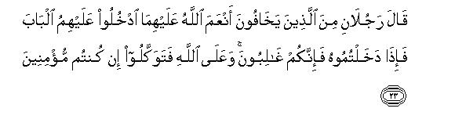
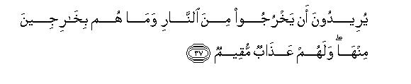
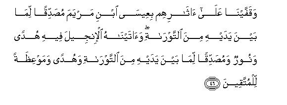
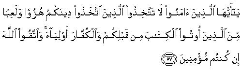
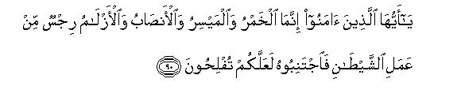

بسم الله الرحمن الرحيم
Sayyid Abul Ala Maududi - Tafhim al-Qur'an - The Meaning of the Qur'an
 5.
Surah Al Maidah (The Table Spread)
5.
Surah Al Maidah (The Table Spread)
This Sarah takes its' name from verse 112 in which the word mai'dah occurs. Like the names of many other surahs, this name has no special relation to the subject of the Surah but has been used merely as a symbol to distinguish it from other surahs.
The theme of this Surah indicates, and traditions support it, that it was revealed after the treaty of Hudaibiyah at the end of 6 A. H. or in the beginning of 7 A. H. That is why it deals with those problems that arose from this treaty.
The Holy Prophet with 1400 Muslims went to Makkah in Zil-Qaadah 6 A.H. to perform `Umrah, but the Quraish spurred by their enmity, prevented him from its performance, though it was utterly against all the ancient religious traditions of Arabia. After a good deal of hard and harsh negotiations, a treaty was concluded at Hudaibiyah according to which it was agreed that he could perform `Umrah the following year. That was a very appropriate occasion for teaching the Muslims the right way of performing a pilgrimage to Makkah with the true Islamic dignity, and enjoining that they should not prevent the disbelievers from performing pilgrimage to Makkah as a retaliation for their misbehavior. This was not difficult at all as many disbelievers had to pass through Muslim territory on their way to Makkah. This is why the introductory verses deal with the things connected with pilgrimage to Makkah and the same theme has been resumed in vv. 101-104. The other topics of this Surah also appear to belong to the same period.
The continuity of the subject shows that most probably the whole of the Surah was revealed as a single discourse at one and the same time. It is also possible that some of its verses were revealed at a later period and inserted in this Surah at different places where they fitted in. But there appears to be not the least gap anywhere in the Surah to show that it might have comprised two or more discourses.
This Surah was revealed to suit the requirements of the changed conditions which were now different from those prevailing at the time of the revelation of Al-i-'Imran and An- Nisa. Then the shock of the set-back at Uhd had made the very surroundings of Al-Madinah dangerous for the Muslims, but now Islam had become an invulnerable power and the Islamic State had extended to Najd on the east, to the Red Sea on the west, to Syria on the north and to Makkah on the south. This set-back which the Muslims had suffered at Uhd had not broken their determination. It had rather spurred them to action. As a result of their continuous struggle and unparalleled sacrifices, the power of. the surrounding clans, within a radius of 200 miles or so, had been broken. The Jewish menace which was always threatening Al-Madinah had been totally removed and the Jews in the other parts of Hijaz had-become tributaries of the State of Al-Madinah. The last effort of the Quraish to suppress Islam had been thwarted in the Battle of the Ditch. After this, it had become quite obvious to the Arabs that no power could suppress the Islamic movement. Now Islam was not merely a creed which ruled over the minds and hearts of the people but had also become a State which dominated over every aspect of the life of the people who lived within its boundaries. This had enabled the Muslims to live their lives without let or hindrance, in accordance with their beliefs.
Another development had also taken place during this period. The Muslim civilization had developed in accordance with the principles of Islam and the Islamic viewpoint. This civilization was quite distinct from all other civilizations in all its' details, and distinguished the Muslims clearly from the non Muslims in their moral, social and cultural behavior. Mosques had been built in all territories, prayer had been established and' Imam (leader) for every habitation and clan had been appointed. The Islamic civil and criminal laws had been formulated in detail and were being enforced through the Islamic courts. New and reformed ways of trade and commerce had taken the place of the old ones. The Islamic laws of marriage and divorce, of the segregation of the sexes, of the punishment for adultery and calumny and the like had cast the social life of the Muslims in a special mold. Their social behavior, their conversation, their dress, their very mode of living, their culture etc., had taken a definite shape of its own. As a result of all these changes, the non-Muslims could not expect that the Muslims would ever return to their former fold.
Before the treaty of Hudaibiyah, the Muslims were so engaged in their struggle with the non-Muslim Quraish that they got no time to propagate their message. This hindrance was removed by what was apparently a defeat but in reality a victory at Hudaibiyah. This gave the Muslims not only peace in their own territory but also respite to spread their message in the surrounding territories. Accordingly the Holy Prophet addressed letters to the rulers of Iran, Egypt and the Roman Empire and the chiefs of Arabia, inviting them to Islam. At the same time the missionaries of Islam spread among the clans and tribes and invited them to accept the Divine Way of Allah. These were the circumstances at the time when Al-Ma'idah was revealed.
It deals with the following three main topics:
Commandments and instructions about the religious, cultural and political life of the Muslims.
In this connection, a code of ceremonial rules concerning the journey for Haj has been prescribed; the observance of strict respect for the emblems of Allah has been enjoined; and any kind of obstruction or interference with the pilgrims to the Kaabah has been prohibited. Definite rules and regulations have been laid down for what is lawful and unlawful in the matter of food, and self-imposed foolish restrictions of the pre-Islamic age have been abolished. Permission has been given to. take food with the people of the Book and to marry their women. Rules and regulations for the performance of Wudu (ablutions) and bath and purification and tayammum (ablutions with dust) have been prescribed. Punishment for rebellion, disturbance of peace and theft have been specified. Drinking and gambling have absolutely been made unlawful. Expiation for the breaking of oath has been laid down and a few more things have been added to the law of evidence.
Admonition to the Muslims.
Now that the Muslims had become a ruling body, it was feared that power might corrupt them. At this period of great trial, Allah had admonished them over and over again to stick to justice and to guard against the wrong behavior of their predecessors, the people of the Book. They have been enjoined to remain steadfast to the Covenant of obedience to Allah and His Messenger, and to observe strictly their commands and prohibitions in order to save them- selves from the evil consequences which. befell the Jews and the Christians who had violated them. They have been instructed to observe the dictates of the Holy Quran in the conduct of all their affairs and warned against the attitude of hypocrisy.
Admonition to the Jews and the Christians.
As the power of the Jews had been totally weakened and almost all their habitations in north Arabia had come under the rule of the Muslims, they have been warned again about their wrong attitude and invited to follow the Right Way. At the same time a detailed invitation has also been extended to the Christians. The errors of their creeds have been clearly pointed out and they have been admonished to accept the guidance of the Holy Prophet. . Incidentally, it may be noted that no direct invitation has been made to the Majusis and idolaters living in the adjoining countries, because there was no need for a separate address for them as their condition. had already been covered by the addresses to the mushrik Arabs.
In continuation of the instructions about the consolidation of the Islamic Community given in Surah An-Nisa, the Muslims have been directed to observe and fulfill all their obligations: further regulations have been prescribed to train the Muslims for that purpose.
They have also been particularly warned as rulers to guard against the corruption, of power and directed to observe the Covenant of the Quran. They have also been exhorted to learn lessons from the failings of their predecessors, the Jews and the Christians, who in their turn have been admonished to give up their wrong attitudes towards the Right Way and accept the guidance taught by Prophet Muhammad (God's peace be upon him).
The Believers have been exhorted to fulfill scrupulously all of their obligations and follow the regulations prescribed by the Divine Law about food, sex, Salat, justice, etc. 1 - 10
The Muslims have been warned to guard against the errors of their predecessors; they should follow the Right Path and avoid the bad example of the Jews and the Christians, who broke their Covenants and went astray into evil ways. They, in their turn, have been admonished to give up their wrong ways and accept Islam. 11 - 26
The story of the two sons of Adam has been related to reproach the Jews for their plot to kill the Holy Prophet and his Companions. (v. 11 & E.N. 30). The story has also been used to emphasize the sanctity of human life. 27 - 32
To achieve this object, punishments have been prescribed for those who create chaos in the Islamic State, and the Believers have been urged to exert their utmost to establish the Right Way; the sanctity of property has also been emphasized. 33 - 40
The Holy Prophet (and through him the Muslims) has been reassured that he should not mind the enmity, the evil designs and the machinations of the Jews, but continue exerting his utmost to establish the Right Way in accordance with the Guidance of the Quran; for nothing better could be expected from those who had forsaken their own Torah. He should deal with the Christians likewise, for they, too, had forsaken their Gospel. 41 - 50
In view of the degenerate moral condition of the Jews and the Christians, the Believers have been warned not to make them their friends and confidants. Likewise they should be on their guard against the evil designs of the hypocrites, the disbelievers and the like and should rely on the true Believers alone. The people of the Book have, in their turn been exhorted to give up their enmity and adopt the right attitude, for they cannot get salvation without this. 51 - 69
The theme of the corruptions of the Jews and Christians has been resumed. The Christians especially have been reproved for their errors in regard to the doctrine of Tauhid. At the same time they have been preferred to the hard hearted Jews, for there are among them some who are more inclined towards the Truth. 70 - 86
In this portion of the Surah, further regulations about the lawful and the un-lawful, in addition to those contained in vv. 1 - 10, have been given. 87 - 108
At the end of the Surah, the mention of the conversation that will take place between Allah and His Prophets on the Day of Judgment, has been made for the benefit of the erring people to serve as a corrective to their creeds. The conversation with Prophet Christ has been cited as a specimen to warn particularly the Christians, who profess to believe in him, and generally all those people who put false hopes in their Prophets, etc. 109 - 119
Conclusion: "O man-kind! The Sovereignty of the heavens and the earth belongs to Allah: therefore you should become His true servants and fear Him, for He has full powers over everything." 120

In the name of Allah, the Compassionate, the Merciful.
[1] O Believers, observe strictly the prescribed limits.1 All kinds of cattle-like animals have been made lawful for you2 except the ones which will be told you here-in-after, but you should not make hunting lawful for yourselves during the state of ihram3 : indeed Allah ordains whatever He pleases.4
[2] O Believers, do not violate the emblems5 of God-worship. Do not make lawful for yourselves any of the forbidden months nor catch hold of the animals dedicated to sacrifice nor lay hands on those animals which are collared as a mark of their dedication to God, nor molest the people repairing to the Inviolable Mosque (the Ka`abah), seeking their Lord's bounty and pleasure.6 You are, however, allowed to hunt after you have put off ihram.7 -And be on your guard : let not your resentment against those, who have barred you from visiting the Ka`abah, incite you so much as to transgress the prescribed limits.8 Nay, cooperate with all in what is good and pious but do not cooperate in what is sinful and wicked. Fear Allah: for Allah is severe in retribution.
[3] You are forbidden carrion9 and blood, the flesh of swine and of that animal which has been slaughtered in any other name than that of Allah,10 and of the strangled animal, and of that beaten to death or killed by a fall or gored to death or mangled by a beast of prey -save of that you duly slaughtered while it was still alive11 -and of that which is slaughtered at (un-godly) shrines.12- 13 It is also unlawful for you to try to find your fortune by means of divining devices,14 for all these things are sinful acts, Today the disbelievers have despaired of (vanquishing) your religion; therefore do not fear them but fear Me. Today15 I have perfected your religion for you and completed My blessing on you and approved Islam as the way of life for you,16 (Therefore observe the limits prescribed by the Law); if, however, one, dying of hunger, eats of any of these forbidden things, provided that he is not inclined towards sin, he will find Allah Forgiving and Compassionate.17
[4] They ask you what has been made lawful for them. Say, "All the good and pure things have been made lawful for you.18 You may also eat of what the hunting animals, which you have trained to hunt in accordance with the knowledge Allah has given you, catch and hold for you,19 you should, however, mention Allah's name over it,20 and fear to violate the Law of Allah. for Allah is swift at reckoning."
[5] All the good and pure things have today been made lawful for you; the food of the people of the Book is lawful for you, and your food for them,21 Likewise you are permitted to marry chaste believing women or chaste women from among the people who were given the Scripture before you22 provided that you give them their dowries and become their protectors in wedlock; this permission is not for sensual license or secret illicit relations; whoever rejects the way of Faith, all the deeds of his life shall become vain and he shall be a bankrupt in the Hereafter.23
[6] O Believers, when you rise to offer the Salat, you must wash your faces and hands and arms up to the elbows and wipe your heads with wet hands and wash your feet up to the ankles;24 and if you have become unclean, cleanse yourselves with a full bath;25 if, however, you are sick or are on a journey, or if any of you has relieved himself or if you have "touched" women and you can find no water, then cleanse yourselves with pure dust: strike your palms on it and wipe your hands and faces with it.26 Allah does not will to make life hard for you, but He wills to purify you and complete His blessing upon you27 so that you may show gratitude.
[7-8] Keep in mind the blessing28 Allah has bestowed upon you and do not forget the solemn covenant which He made with you (and which you confirmed), when you said, "We have heard and submitted," Fear Allah for Allah knows the very secrets of the hearts. O Believers, be steadfast in righteousness and just in giving witnesses for the sake of Allah;29 the enmity of any people should not so provoke you as to turn you away from justice. Do justice for it is akin to piety. Fear Allah (in your affairs): indeed He is fully aware of what you do.
[9-10] Allah has promised that He will pardon the errors of those who believe and do good deeds, and will give them a rich reward. As for those who disbelieve and treat the Revelations of Allah as false, they shall go to Hell.
[11] O Believers, recall to mind the favor which Allah has (recently) shown to you: when some people intended to do harm to you, Allah restrained their hands from you.30 Fear Allah in whatever you do for the Believers should put their trust in Allah alone.
[12-13] Allah had bound the Israelites by a solemn covenant, and appointed twelve supervisors31 from among them and said, "I am with you; if you establish the Salat, pay the Zakat and believe in My Messengers,32 and support them and give a generous loan to Allah,33 I shall surely wipe out your evils from you,34 and admit you into gardens under which canals flow, But after this whoever from among you adopted the way of disbelief, has indeed gone astray from the Right Way."35 Then they broke their covenant and because of this We deprived them of Our mercy and hardened their hearts. Now they have become so degenerate that they distort the words of the Scriptures so as to change their meanings completely: moreover, they have forgotten the major portion of the teachings given to them and every now and then you find out one act or the other of their dishonesty. There are only a few of them who are free from this vice: (so whatever mischief they do is to be expected of them). Yet pardon them and connive at what they are doing: Allah likes those who show generosity in their dealings.
[14] Likewise We bound by a covenant those people, who said,"We are Nasara."36 But they too, forgot much of what had been taught to them. So We sowed among them seeds of discord, enmity and hatred that shall last up to the Day of Resurrection, and surely the time will come when Allah will tell them of what they had been contriving in the world.
[15-16] O People of the Book, Our Messenger has come to you; he makes manifest to you many things of the Book which you were concealing, and passes over many others.37 Light has come to you from Allah and the Book which guides to the Truth, whereby Allah leads to the paths of peace38 those who seek His pleasure and brings them out of the depths of darkness into the Light by His grace and guides them towards the Right Way.
[17] Indeed they committed blasphemy, who said, "The Messiah, son of Mary, is verily God."39 O Muhammad, say to them, "If Allah chose to destroy the Messiah, Mary's son, and his mother, and all the dwellers of the earth, who has the power to prevent Him from this? For, to Allah belongs the Kingdom of the earth and the heavens and all that is between them: He creates whatever He wills40 and has power over everything."
[18] The Jews and the Christians say, "We are the sons of Allah and His beloved ones." Ask them, "Why then does He punish you for your sins? In fact, you are also human beings like the other human beings He has created. He forgives whomever He wills and punishes whomever He wills. To Allah belongs the Kingdom of the earth and the heavens, and all that is in it and all shall return to Him."
[19] O People of the Book, this Messenger of Ours has come to you and is making clear to you the teachings of the Right Way after a long interval during which there had come no Messengers, lest you should say, "No bearer of good news nor Warner came to us. Lo, now the bearer of the good news and Warner has come.- And Allah has power over everything."41

[20-26] Call to mind the time when Moses said to his people, "O my people, remember the favor which Allah bestowed upon you. He raised up Prophets from among you and made you rulers and gave you that which had not been given to anyone in the world.42 O my people, enter the Holy Land that Allah has destined for you,43 and, do not turn your backs or you will turn about losers,"44 They replied, "O Moses, in that land dwell mighty people; therefore we are never going to enter it till they leave it; if, however, they leave it we are ready to enter it. " Among those, who were filled with fear, there were two persons45 whom Allah had blessed with His favor: they said, "Make your way into the gate against those mighty people; when you enter it, you will surely be victorious. Trust in Allah, if you are true believers." But even then they replied, "O Moses, we are never going to enter it so long as they remain therein. Therefore, go, both you and your Lord, and fight: we will stay here," At this Moses cried. "My Lord, I have no power over anyone but myself and my brother: so set us apart from these disobedient people." Allah replied, "Very well, they are forbidden this land for forty years, during which period they shall wander homeless on the earth:46 so do not grieve at all for these disobedient people.47
[27-31] And tell them accurately the story of the two sons of Adam. When the two offered their sacrifices, the offering of the one was accepted but that of the other was not accepted. The latter said, "I will kill you. " The other answered, "Allah accepts the offerings of the pious people only.48 Even if you stretch your hand to kill me, I shall not lift my hand to kill you,”49 for I fear Allah, the Lord of the Universe; I would rather prefer that you should bear the burden of my sin as well as of your own sin,50 and become a dweller of hell; this is the just retribution of the iniquity of the aggressors." Even after this his evil soul prompted him to slay his brother without the slightest compunction; so he killed him and became one of the losers. Then Allah sent a raven which began to scratch the ground to show him how he might hide the corpse of his brother. Seeing this, he cried, "Woe be to me! I have not been able to do even as this raven has done and so devise a plan of hiding the corpse of my brother."51 After this he became very remorseful of what he had done.52
[32] That was why We prescribed this for the children of Israel:53 "He who killed any person, unless it be a person guilty of manslaughter, or of spreading chaos in the land, should be looked upon as though he had slain all mankind, and he who saved one life should be regarded as though he had saved the lives of all mankind."54 But the majority of them went on committing excesses in the land even after Our Messengers came to them one after the other with clear directions.
[33-34] The punishment of those who wage war against Allah and His Messenger and run about to spread mischief in the land55 is this; they should be put to death or crucified or their alternate hands and feet should be cut off, or they should be banished from the land.56 This is the disgrace and ignominy for them in this world and there is in store for them a harsher torment in the Hereafter, except those, who repent before you have power over them for you should know that Allah is Forgiving and Compassionate.57
[35-36] O Believers, fear Allah and seek the means of winning His pleasure58 and exert your utmost in His way59 so that you may attain true success. Note it well that those, who have adopted the way of disbelief, shall not escape retribution, for even if they possessed all the wealth of the earth and the like of it with it and offered it as ransom to redeem themselves from the torment of the Day of Resurrection, that will not be accepted from them and they shall receive a painful punishment.

[37] They will wish to get out of the fire of Hell but shall not be able to come forth from it and theirs shall be an everlasting torment.
[38-40] As for the thief, whether man or woman, cut off the hand60 of either of them: it is the recompense for what they have earned, and an exemplary punishment from Allah; Allah is All-Powerful, All-Wise. But whoever repents after his iniquity and reforms himself, Allah will surely turn towards him with His favor;61 Allah is Forgiving and Compassionate. Do you not know that Allah is the Sovereign of the Kingdom of the heavens and the earth? He may punish whom He wills and may pardon whom He wills; He has power over everything.
[41] O Messenger, let not those who are striving hard in the way of disbelief,62 grieve you, whether they be from among those who say with their mouths, "We believe," but their hearts do not believe, or from among those who have become Jews; for the latter eagerly listen to lies.63 They spy for other people who have never had any chance of coming to you:64 they twist the words of Allah's Book out of their context in order to distort their proper meaning:65 they say to the people, "If you are enjoined to observe such and such teaching, accept it; if it is other than this, reject it."66 You can do nothing to save from Allah's punishment a man whom Allah wills to put to trial.67 They are those, whose hearts Allah does not will to purify;68 there is ignominy for them in this world and a grievous punishment in the Hereafter.
[42-43] They are listeners to falsehood and greedy devourers of the forbidden.69 If, therefore, they come to you (with their cases), you may judge between them or refuse to do so: for even if you refuse, they will not be able to do any harm to you; but if you judge between them, then judge with justice, for Allah loves those who act justly.70 Yet, how ' is it that they make you their judge, when they themselves possess the Torah, in which there is Allah's judgment, and even then they are turning away from it?71 In fact, these people have no faith.
[44] Indeed, We sent down the Torah wherein was Guidance and Light: thereby All the Prophets, who were Muslims, judged the cases of those who had become Jews.72 Likewise the Rabbanis and the Ahbar73 (based their judgment on it), for they were made the guardians of the Book of Allah and witnesses to it. So, (O Jews), do not fear the people but fear Me and do not sell My revelations for paltry worldly gains: those, who do not judge by the Law which Allah has sent down, are indeed the disbelievers.
[45] We had prescribed this decree in the Torah for the Jews: "Life for life, eye for eye, nose for nose, ear for ear, tooth for tooth, and for all wounds equal retaliation."74 However, whoever forgoes retaliation as charity, it shall be expiation for him:75 those, who do not judge by the Law which Allah has sent down, are indeed the unjust people.

[46-47] Then after those Prophets, We sent Jesus, son of Mary; he confirmed whatever had still remained intact of the Torah in his time. And We gave him the Gospel wherein was Guidance and Light; that too, confirmed what was intact of the Torah76 at the time; moreover, it was guidance and admonition for the God-fearing people. We had enjoined that those who were given the Gospel. should judge by the Law which Allah has sent down in it: those, who do not judge by the Law which Allah has sent down, are the transgressors.77
[48-50] Then, O Muhammad, We sent this Book to you which has brought the Truth: it confirms whatever has remained intact from the Book78 at the time of its revelation and safeguards79 and protects it. Therefore you should judge between the people by the Law sent down by Allah and do not follow their desires by turning aside from the Truth that has come to you.80 We prescribed a law and a way of life for each of you, though your Lord could have made all of you a single community, if He had so willed. But (He willed otherwise) in order to test you in what He has bestowed upon each of you: therefore try to excel one another in good deeds. Ultimately, you shall all return to Him; then He will let you know the truth about that in which you have been differing81 So,82 O Muhammad, judge between these people by the Law that has been sent down to you and do not follow their wishes: be on your guard lest these people should tempt you away, even in the least, from the Guidance that has been sent down to you by Allah. If they turn away from it, then know that Allah wills to involve them in trouble in consequence of some of their sins. And the fact is that the majority of these people are transgressors. (If they turn away from the Divine Law, then) do they desire to be judged by the laws of ignorance?83 Yet there is no better judge than Allah for those who believe in Him.
[51] O Believers, do not take the Jews nor the Christians as your friends: they are one another's friends only. If anyone of you takes them as friends, surely he shall be counted among them; indeed Allah deprives the wrong-doers of His Guidance.
[52-53] You see that those, who have the disease of hypocrisy in their hearts, are always moving among them. They say, "We fear lest we should get involved in some disaster."84 But it may be that these people will feel ashamed of the hypocrisy they are hiding in their hearts; when Allah will give you a decisive victory or show something else from Himself.85 At that time the Believers will say, "Are these the same people who stated upon solemn oaths by Allah that they were with you?" - All their deeds became vain and they ended in utter failure.86
[54] O Believers, whoever turns away from Islam, (let him); Allah will raise many such people ' whom He will love and who will love Him; who will be lenient towards the Believers but stern towards the disbelievers;87 who will exert their utmost in the way of Allah and will not fear the censure of anyone who censures them.88 This is Allah's bounty: He bestows it on whomever He wills, for Allah's resources are boundless and He is All-Knowing.
[55-56] Your friends, indeed, are Allah and His Messenger and the Believers who establish the Salat, pay the Zakat and bow down before Allah. And whoever makes Allah and His Messenger and the Believers his friends, let him know that Allah's party will surely come out victorious.

[57-60] O Believers, do not take your friends from among the people, who were given the Book before you and such as make a jest and pastime of your Faith; and (likewise ,do not take for your friends) the other disbelievers; fear Allah, if you are true Believers. When you make a call for the Prayer, they make it an object of jest and sport;89 this is because they are devoid of understanding.90 Say to them, "O people of the Book, what is there that gives you offense against us other than that we believe in Allah and what has been sent down to us and what was sent down before us? And the fact is that most of you are transgressors." Then say, "Should I inform you of those, who will have even worse recompense from Allah than the transgressors?" They are those whom Allah has cursed; who have been under His wrath; some of whom were turned into apes and swine; who worshiped taghut; those are the people who are in a far worse plight and who have turned farthest away from the Right Way."91
[61-63] When they come to you, they say, "We have believed," but in fact they had come in a state of un-belief and departed with disbelief; Allah knows full well what they were concealing in their hearts. You see most of them are striving for sinful and wicked deeds and eating what is unlawful: evil indeed are the things they have been doing. Why do their rabbis and divines not forbid them to say sinful words and to eat unlawful things? It is indeed an evil record of their lifework which they are preparing!
[64] The Jews say that the hands of Allah are chained92 Nay chained indeed are their own hands93 and accursed they have become because of the blasphemy they utter94 Allah's hands are free and He expends in whatever way He wills. The fact is that the Message which has been sent down to you from your Lord has rather increased the rebellion and disbelief of many of them:95 (as a consequence of this) We have cast between them enmity and hatred till the Day of Resurrection. Whenever they kindle the fire of war, Allah extinguishes it; now they are striving to spread mischief in the world but Allah does not like the mischief makers.
[65-66] If (instead of this rebellion), the people of the Book had believed and adopted the way of God-fearing, We would have removed their evils from them, and admitted them into the gardens of bliss. Had they observed the Torah and the Gospel and the other Books which had been sent down to them by their Lord, abundance would have been given to them from above and from beneath.96 Though there are some among them who are righteous, most of them are evil-doers.
[67-68] O Messenger, convey to the people whatever has been sent down to you from your Lord; for, if you do not do this, you will not be doing justice to His Message. Allah will protect you from the mischievous deeds of the people. Rest assured that He will not show the disbelievers the way to success (against you). Tell them plainly, "O people of the Book, you have no valid ground to stand on unless you observe the Torah and the Gospel and the other Books which have been sent down to you from your Lord."97 It is certain that the foregoing decree which has been sent down to you from your Lord, will increase all the more the rebellion and disbelief of many of them,98 but you should not grieve for the disbelievers.
[69] (Believe it that none enjoys any privilege): whoever from among the Muslims or the Jews or the Sabaeans or the Christians believes in Allah and the Last Day and does good deeds will have no cause of fear or grief or sorrow.99
[70-71] We made a solemn covenant with the children of Israel and sent many Messengers to them; but whenever any Messenger came to them with a thing which was against their desires, they either treated him as a liar or slew him: yet they presumed that no mischief would come of it: they, therefore, became blind and deaf: after this Allah forgave them but again most of them went on behaving even more like the blind and the deaf;.Allah has been watching all the evil things they have been doing.
[72] Most certainly they committed blasphemy, who said, "Allah, He is indeed the Messiah, Mary's son"; whereas the Messiah had said, "O children of Israel, `worship Allah alone, Who is my Lord and your Lord as well"99a Whoever joins a partner with Allah, Allah shall forbid him the Garden, and Hell shall be his abode: and such workers of iniquity shall have no helpers.
[73-74] Most certainly they committed blasphemy, who said, "God is one of the three": whereas there is no deity other than the One Deity. And if these people do not desist from uttering such words, a painful chastisement shall be inflicted on all those from among them who have been guilty of blasphemy. Will they not, then, turn to Allah and ask His pardon? Allah is very Forgiving and Compassionate.
[75] The Messiah, son of Mary, was no more than a Messenger: many Messengers had already passed away before him. His mother was a righteous woman and they both ate food. Behold! how We make clear to them the signs leading to the Reality, and, again behold, how they are perverted.100
[76-77] Say to them, "Do you worship instead of Allah that which has no power to harm nor benefit you'? In fact, it is Allah alone Who hears everyone and knows everything." Say, "O people of the Book, do not transgress the bounds of truth in your religion, and do not follow the fancies of those who themselves went astray before you and led astray many others and strayed away from the Right Way."101
[78-81] Those who adopted the way of disbelief from among the children of Israel were cursed by the tongue of David and of Jesus. Mary's son, because they had grown rebellious and become transgressors: they would not forbid one another to do the wrong deeds they committed;102 evil was the way they had adopted. Today you see many of them who take the side of the disbelievers (against the Believers). Indeed it is an evil end to which their souls have prompted them: for they have incurred the wrath of Allah and they are going to suffer eternal torment. Had they believed in Allah and the Prophet and in what was revealed to him, they would never have made friends with the disbelievers”103 (against the Believers), but many of them have become disobedient to Allah.

[82-86] You will find that the most hostile of all people in their enmity to the Believers are the Jews and the mushriks; and you will find that the nearest in friendliness to the Believers are those, who say, "We are Christians. " This Is because there are among them some pious scholars and monks and because they are free from pride. When they listen to that which has been sent down to the Messenger, you see their eyes overflow with tears because of the Truth they recognize therein. They spontaneously say, "Our Lord, we have believed; therefore, write down our names with those who bear witness to it." And they say, "Why should we not believe in Allah and accept the Truth that has come to us, when we are eager that our Lord may count us with the righteous people?" And, for these words of theirs, Allah rewarded them with the Gardens underneath which canals flow, wherein they will live for ever. This is the reward of the righteous people. As for those who rejected Our Revelations and treated them as false. they deserve Hell.
[87-88] O Believers, do not make unlawful those pure things which Allah has made lawful for you,104 and do not go beyond the limit;105 indeed Allah does not like the transgressors. Eat easefully of the lawful and pure things which Allah has provided you, and refrain from disobeying Allah in Whom you have believed.
[89] Allah does not take you to task for the inadvertent oaths you swear, but He will surely call you to account for the intentional and deliberate oaths you make. The expiation (of breaking such an oath) is to feed ten indigent persons with the normal food you serve in your own family, or to give them clothes, or to free one slave, and the one who cannot afford any of these let him fast three days. This is the expiation of breaking the solemn oaths you have taken;106 be mindful of your oaths.107 Thus Allah makes His Commandments plain to you so that you may show gratitude.

[90-92] O Believers, wine, gambling, (ungodly) shrines and divining devices are all abominable works of Satan:108 therefore refrain from these so that you may attain to true success.109 Indeed Satan intends to sow enmity and' hatred among you by means of wine and gambling, and to prevent you from the remembrance of Allah and from Salat. Will you not, , therefore, abstain from these things? Obey Allah and His Messenger and abstain from these things; but if you disobeyed, note it well that Our Messenger's only responsibility was to convey the Message clearly.
[93] Those, who have believed and done good deeds, shall not be called to account for whatever they might have eaten in the past, provided that they abstain in future from those things that have been made unlawful, and remain steadfast in their Faith, and do good works: then restrain themselves from whatever they are forbidden and believe in the Divine Law: then fear Allah and adopt the righteous attitude, for Allah likes those who do righteous deeds.
[94-95] O Believers, Allah will put you to a hard trial by that game which will come within the very reach of your hands or lances, in order to see who fears Him even though He is invisible: there shall, therefore, be a painful punishment for those who transgress the limits after this warning. O Believers, do not kill game while you are in the state of ihram.110 And, whoever of you kills an animal intentionally, he small have to make an offering of a head of cattle equivalent to it, which will be decided by two just men from among you. This offering shall have to be sent to the Ka`bah or, failing this, he shall have to feed indigent people by way of expiation or compensate for it by equivalent fasting,111 so that he may taste the evil consequence of what he did. Allah has forgiven what has gone before, but if anyone repeats the same, Allah will inflict retribution on him: Allah is All-Mighty and All-Powerful to inflict retribution.
[96] Game of the sea and its use as food has been made lawful for you:112 you may eat it at your halting place and also use it as a provision for the caravan, but the game of the land has been prohibited so long as you are in the state of ihram. So refrain from the disobedience of that Allah before Whom you shall all be mustered together.
[97-100] Allah has made the sacred House of the Ka'bah a means of stabilizing the (community) life of the people ; the sacred month and the animal offerings and the animals which are collared as a mark of dedication (have also been made conducive to the same object)113 so that you may know that Allah is fully aware of all that is in the heavens and the earth and that He has perfect knowledge of everything.114 Note it well that Allah is very severe in punishing. and at the same time He is very Forbearing and Merciful. The only duty of the Messenger is to convey the Message ; Allah knows whatever you disclose and whatever you hide.. Tell them, O Messenger, that the pure and the impure cannot be alike anyhow, although the abundance of the impure may allure you much.115 So, O people of understanding, refrain from the disobedience of Allah : it is expected that you will attain to true success.
[101-102] O Believers, do not ask questions concerning such things, which, if made known to you, would only vex you116 but, if you will ask such questions at the time when the Qur'an is being sent down, they will be made known to you. Allah has forgiven what you have done so far : for He is Forgiving and Forbearing. Some people before you asked such questions : then they were involved in disbelief because of those very things.117
[103-104] Allah has ordained neither Bahirah nor Sai bah nor Wasilah nor Ham118 but the unbelievers have invented a falsehood against Allah, and most of them lack understanding (so they believe in such superstitions). And when it is said to them, "Come to the Law which Allah has sent down and to the Messenger," they reply, "Sufficient for us is the way on which we found our forefathers.' What! will they go on following their forefathers, even if they knew nothing, and were quite ignorant of the Right Way?
[105] O Believers, look after your own souls ; it can do no harm to you, if anyone else goes astray, provided that you yourselves are on the right path.119 To Allah shall you all return :then He will let you know what you have been doing.
[106] O Believers, when the time of death approaches anyone of you,and he is going to make his will, the principle of evidence is that two just men120 from among you should act as witnesses. Or, if you are on a journey and the calamity of death befalls you there, the two witnesses may be taken from among the non Muslims.121 Then, if you have any doubt, both the witnesses should be detained (in the mosque) after the Prayer, and they should testify upon oath by Allah, "We are not going to sell our evidence for any personal benefit, and even though he be our own relative, (we will not be partial to him) ; we are not going to hide evidence which we are giving for the sake of Allah for we shall be sinners if we do so"
[107-108] But if it is discovered that the two had been guilty of the same sin, then two other better qualified witnesses than the former, from among those who were deprived of their right, should come forward and testify upon oath, by Allah, "Our testimony is truer than their testimony, and we have not made any transgression in our testimony: we shall be among the unjust, if we do so." It is expected that in this way the people will give only true evidence: or, at least, they will fear lest their oaths should be contradicted by subsequent oaths. Fear Allah and listen: Allah does not show His Guidance to those who are disobedient.
[109-114] On the Day,122 -- when Allah will assemble all the Messengers, He will ask, "What was the response you received?"123 They will answer, "We have no knowledge:124 You alone have the full knowledge of all that is hidden." Just imagine the occasion, when Allah will say125 "O Jesus, son of Mary, recall to mind My favor I bestowed upon you and upon your mother: I strengthened you with the Holy Spirit; you talked to the people even in the cradle as you talked when you were grown up; I taught you the Book and the Wisdom and the Torah and the Gospel: by My leave you made from clay the likeness of a bird, and breathed into it, and by My leave it became a living bird; by My leave you healed the born-blind and the lepers; by My leave you brought forth the dead.126 Also remember that I protected you from the Israelites, when you came to them with clear signs, and the disbelievers among them said, `These signs are nothing but obvious sorcery" and remember also that I inspired the Disciples to believe in Me and My Messenger; then they said, `We have believed and bear witness that we are Muslims."127 (In regard to the disciples),128 this incident may also be kept in mind: They said, "O Jesus, son of Mary, can your Lord send down to us from heaven a tray of food?" Jesus said, "Fear Allah, if you are true Believers." They replied, "We only wish to eat of this tray so that our hearts may be re-assured and we may know it for certain that what you have said to us is true, and that we may bear witness to it." At this, Jesus, son of Mary, prayed, "O Allah, our Lord, send to us from heaven a tray of food that it may become a recurring festival to us, to the first of us and to the last of us, and that it may be a Sign from You. Provide for us and You are the best of providers."

[115-119] Allah answered, "I am going to send it down to you,129 but whoever among you shall disbelieve after that, I will surely give him such a chastisement wherewith I will not have chastised any other creature in the world." (After reminding him of these favors), Allah will say, "O Jesus, son of Mary, did you ever say to the people, 'Make me and my mother deities besides Allah'?"130 He will say. "Glory be to You! It did not behoove me to say that which I had no right to say. Had I ever said such a thing, You would most surely have known it, for You know all that is in my mind, but I do not know what is in Your mind: indeed You have full knowledge of all the hidden things. I never told them anything other than what You bade me. I said, `Worship Allah, Who is my Lord as well as your Lord.' I was a witness to their conduct as long as I remained among them but when You recalled me, You watched over them; for You keep watch aver everything. Now, if You punish them, they are your own servants, and if You forgive them, You are All-powerful and All Wise. " Then Allah will declare, "This is the Day when the truthfulness of the truthful benefits them; there are such Gardens for them underneath which canals flow; they will dwell therein for ever. Allah is pleased with them and they are pleased with Him; this is the Greatest success."
[120] The Sovereignty of the heavens and the earth and whatever is therein belongs to Allah and He has power over everything.
1The Sovereignty of the heavens and the earth and whatever is therein belongs to Allah and He has power over everything.
2The Arabic word an `am applies to camel, cow (ox), sheep and goat and bahimah to all kinds of grazing quadrupeds. The combination of the two words has made the meaning more comprehensive by including all the grazing quadrupeds that resemble those four contained in the word an'am. It also implies that the carnivore that kill other animals for food are unlawful. The Holy Prophet made this explicit in a Tradition declaring the carnivore unlawful. Likewise he also declared unlawful those birds that have claws and kill other animals for food or eat dead bodies According to Ibn `Abbas, the Holy Prophet prohibited the eating of the flesh of the carnivore and of the birds with claws. Other Traditions from several Companions also support the same.
3Ihram is the pilgrim's robe which has to be put on at fixed boundaries at the known distances from the Ka'abah. It is not lawful for any pilgrim to proceed to the Ka`abah until he puts off his usual dress and puts on the pilgrim's garb. This consists of two pieces of cloth without seam or ornament, one of which is wrapped round the loins and the other thrown over the shoulders. The instep, heel and head must be bare. This is called the state of Ihram because it makes unlawful even some of the things that are ordinarily lawful. For instance, one should not have a shave or a hair-cut and should not wear other clothes or ornaments nor use perfumes nor indulge in sensual desires and the like. Another restriction is the prohibition against killing any animate object or against hunting or against directing any one else to help hunt an animal. (Please refer also to E.N. 213, Al-Baqarah).
4This means that Allah has absolute authority to issue any decree He wills, and that the servants have no right at all to question it. Though all His Decrees and Commands are based on wisdom and are full of excellence, yet a Muslim, His servant, does not obey these just because they are proper and conducive to his good, but obeys them because they are commandments from his Sovereign. If He declares anything to be un-lawful, it becomes un-lawful for no other reason than that it has been made unlawful by Him. Likewise if He makes anything lawful, it becomes lawful for no other reason than that its Owner and the Owner of everything permits His servants to use it. That is why the Qur'an establishes with full force the fundamental principle that the only basis which makes a thing lawful or unlawful is whether there is the permission of the Owner for its use or not. Likewise there is no other basis for the servant to consider a thing to be lawful or un-lawful except that it is lawful if Allah makes it lawful and un-lawful if He prohibits it.
5Sha a-ir is the plural of shi- ar (emblem). Every object or a representation of it, that symbolizes a way or a creed or a mode of thought or action or a system is called its shi'-ar because it serves as an emblem of it. Official flags,police and army uniforms, coins, currency notes, stamps etc., are the sha "a-ir of governments which demand due respect for these from all under them, and, as far as possible, from others as well. For instance, Temple. Altar, Cross etc., are the .sha'a-ir of Christianity. the Hammer and Sickle is the shi-'ar of the Communist Party, and- the Swastika of the Nazi Party. AlI of them demand reverence and respect for their emblems from their followers. If anyone shows disrespect for any of the emblems of any system, it is an indication that he has enmity with that system and it the offender belongs to the same system, this act will be tantamount to apostasy and rebellion against it.
The Sha a-ir-Allah (Emblems of Allah) are those signs and symbols that represent the pure way of God-worship as against the ways of idolatry, unbelief, paganism and atheism. The Muslims are required to show respect to the emblems of Allah wherever they find them in any way or system, provided that their psychological background is purely attributed to God-worship and has not in any way been polluted by any association with idolatry or unbelief. Therefore, if a Muslim comes across anything in the creed and deed of a non-Muslim which has an element of God-worship in it, he will show due respect to that element and to the emblems connected with God-worship. There will be no dispute with the non Muslims on that account: a dispute arises only when he pollutes God-worship with the worship of others.
In this connection, it should be noted that the command to show due respect to the emblems of Allah was given at a time when the Muslims were at war with the pagan Arabs who were in possession of Makkah. This was necessitated because some of the pagan Arabs had to pass on their way to the Ka'abah through places where the Muslims could strike at them easily. Therefore the Muslims were enjoined not to molest them when they were proceeding to the House of Allah, even though they were idolaters and at war with them. Like wise, the Muslims should not attack them during the months of Hajj nor snatch from them those animals, which they were taking to the House of Allah as offering. This is to ensure that the element of God-worship, which had .remained intact in their corrupt religion, should be respected and not violated
6Immediately after this Command, a few emblems of Allah have been specially mentioned because there was an imminent danger of their violation by the Muslims owing to the state of war. This does not, however, mean that these emblems alone are to be respected.
7Incidentally the command about ihram has been given here because this is also one of the emblems of Allah. Hunting during the state of ihram is prohibited, because it is the violation of one of the emblems of Allah. But when the restrictions of ihram come to an end according to the law, one is permitted to hunt, if one desires to do so.
8This prohibition was laid down to check the Muslims from preventing the pagan Arabs from proceeding to Hajj and attacking them when they were passing through their territories. The Muslims had been so enraged when their enemies had prevented them from visiting the Ka'abah and from the performance of Hajj in contravention of their old custom that they were prone to retaliate, but Allah warned them not to transgress the bounds.
9That is, the flesh of the animal that dies a natural death.
10That is, the flesh of the animal which has been slaughtered in the name of another than Allah or has been slaughtered with the intention of dedicating. it to a saint or a god or a goddess etc. (Please also see E.N. 171 of Al-Baqarah).
11That is, "If an animal falls a victim to any of these accidents but is still alive and is duly slaughtered, it is lawful to eat its flesh". This also implies that the flesh of a clean animal becomes lawful only when it is slaughtered in the prescribed way and that there is no other way of making it lawful. In the prescribed way only that much of the throat is cut that enables the blood to flow out freely. This cannot happen if the whole of the neck is cut off or if the animal is strangled or killed in any other way because in that case most of the blood remains in the body and congeals at different places and sticks to the flesh. But when it is slaughtered in the prescribed way, the whole of the body remains connected with the brain for a sufficiently long time to allow the blood to flow totally out of the body and the flesh is cleansed of the blood which in itself is unlawful. Therefore it is essential that the flesh should be cleansed of blood in order to become lawful.
12The Arabic word nusub applies to all those places which have been specifically dedicated to any saint or god, etc., for making offerings to them or for any other kind of ungodly worship whether there is or is not any sort of stone or wooden idol therein.
13In this connection, it should be understood well that the limits prescribed by the Law for making eatables lawful or unlawful are not laid down from the point of view of physical health but from the moral and spiritual points of view. As regards the matters concerning physical health, these have been left to man's own judgment and discretion, It is his own business to find out what things are useful or harmful for his physical health and nourishment and the Law does not take any responsibility for his guidance in this respect. Had it done so, poison would have been the first thing to be made unlawful, but there is absolutely no mention of this or other deadly things in the Qur'an or the Traditions. The Law is only concerned about what is morally or spiritually harmful or beneficial and also about the right or wrong means for obtaining lawful things. It is obvious that man has no means of finding out these things by himself and is consequently liable to commit errors in this matter without the guidance of the law. For whatever has been prohibited, has been prohibited because it is harmful from the point of view of cleanliness or morality or belief. On the contrary, whatever has been made lawful, has been made so because it is free from all these evils.
One might ask why Allah has not explained the philosophy underlying the prohibition of certain things for the clear understanding of the people. This is because it is not possible for mankind to comprehend this. For instance, it is not possible for us to make a research into the nature of moral evils that are produced by eating carrion, blood or the flesh of swine, nor is it easy to find out how they are produced and to what extent, because we have no means of measuring or weighing morality, It is, therefore, obvious that, even if their evil effects had been explained, the position of the skeptic would have remained the same as before for the lack of means of testing their veracity.
This is why Allah has declared the observance of the limits prescribed for the lawful and the unlawful as a matter of belief. One, who believes in the Qur'an as the book of God and in the Holy Prophet as His Messenger and in Allah as All Knowing and All-Wise, will observe the prescribed limits whether one understands their philosophy or not. On the other hand, if one does not believe in this basic creed, one will avoid only those things which are harmful according to human knowledge and will go on suffering from the consequences of those which man has not learned to be harmful.
14This verse comprises three categories of prohibitions:
(1) It prohibits the pagan ways of taking omens from a god or a goddess and the like, about one's fortune or getting indications as to the future or deciding disputes. For instance, the pagan Quraish of Makkah had specified the idol of Hubal at the Ka`abh for this purpose and kept near it seven divining arrows. They would, after presenting the offering to the priest and performing certain ceremonies, pull out an arrow and regard the words engraved on it as the verdict of Hubal.
(2) The second category consists of the superstitious ways and irrational methods of taking decisions about the daily problems of life for anything regarded as portending good or evil regardless of reason or knowledge, or of finding out future events blindly by the ominous significance of particular things, circumstances, occurrences or proceedings or the like. In short, it included all the so-called arts of prediction and prophetic significance.
(3) The third category includes all kinds of gambling in which the distribution of things etc., is based on mere chance and not on merit, right, service or other rational considerations. For instance, all the schemes of lottery which entitle a certain holder of a ticket to a prize merely on chance, and at the expense of a large number of other holders of such tickets, or the award of prizes for cross-word puzzles in which a certain answer out of a large number of correct ones corresponds, by mere chance, to the answer that has been ear-marked as correct for the purpose - all these things are unlawful.
However, one simple form of casting lots is lawful in Islam, when there are two equally lawful things or rights and there is no rational method of deciding between them. Supposing two persons have equal rights, in every respect, to something and the judge finds no rational justification to give preference to either of the disputants, neither of whom is willing to forgo his rights. In such a case, if they mutually agree, the matter may be decided by casting lots, or if one has to choose one of the two lawful things and is in difficulty in regard to the choice, one is allowed to cast lots for it. The Holy Prophet adopted this method on such occasions as required a choice to be made between two persons with equal rights, whenever he thought that if he himself decided in favor of one, the other might be grieved.
15"Today" does not mean a particular day or date but the time when this verse was revealed.
"The disbelievers have despaired of your religion" means: "After along systematic resistance and opposition, they have lost hope of defeating your religion. Now they do not expect that you wilt ever return to the former way of "ignorance" because your religion has become a permanent way of life and has been established on a firm footing. Therefore. "Do not fear them but fear Me." That is, there is no longer any danger of interference from the disbelievers that they will prevent you from the performance of your religious obligations. You should, therefore, fear God and observe His commands and instructions because no ground for fear has been left for you. Now your disobedience of the Law will mean that you do not intend to obey Allah."
16"I have perfected your religion" means: "I have provided it with all the essential elements of a permanent way of life which comprises a complete system of thought and practice and civilization and have laid down principles and given detailed instructions for the solution of all human problems. Hence there is no need for you to seek guidance and instructions from any other source."
The completion of "the blessing" is the completion of the blessing of guidance.
"I have approved Islam as the way of life for you" because you have practically proved by your obedience and devotion to it that you sincerely believe in Islam which you have accepted. As I have practically set you free from every kind of subjection and servitude there is no compulsion for you to submit to any other than Me in your practical life." It also implies, "As a gratitude for these blessings of Mine, you should show no negligence in the observance of the prescribed limits."
Authentic traditions show that this declaration was revealed on the occasion of the last Hajj performed by the Holy Prophet in A.H. 10. I am however of the opinion that it was at first revealed in A.H. 6 close after the treaty of Hudaibiyah as a part of this discourse, but was again sent down to the Holy Prophet for its declaration on that suitable occasion. This is because this verse is so well knit in this context that it would be incomplete without it, Therefore it cannot Be imagined that it was inserted here afterwards when it was revealed in A.H. 10. I believe (and the real knowledge is with Allah) that at the time of its revelation in this context its real significance was not realized, therefore in A.H. 10, when the whole of Arabia was subdued and the power of Islam reached its zenith, Allah again sent down these sentences to His Prophet for their declaration on the occasion of his last Hajj.
17Please refer to E.N. 172 of Al-Baqarah.
18A subtle point is hidden in this answer. It is meant to set right the doubting attitude of some "religious persons," who regard everything as unlawful unless it is explicitly declared to be lawful. There was a need to remove this doubt because it makes people very fastidious. So much so that such people begin to demand a complete list of lawful things in every sphere of life and look at everything with a doubting attitude. Those who asked the question did so with the intention of obtaining a detailed list of the lawful things so that they might consider all other things as unlawful. However, the Qur'an did the opposite of it and gave a detailed list of the forbidden things and made all other good things lawful. This was a great reform, for it set human life free from many bondages and opened wide the doors of the vast world for mankind. Before its revelation only a limited number of things were lawful and the remaining vast world was unlawful, but this verse declared a limited number of things unlawful and made the remaining vast world lawful.
"Lawful" has been qualified with "pure"so that impure things might not be made lawful just because they have not been included in the list of prohibition. As regards the criterion for judging whether a thing is pure or not, it should be noted that all those things are pure which are not unclean according to any principle of the Islamic Law, or which are not offensive to good taste or have not universally been regarded as repugnant by cultured people.
19Hunting animals are dogs, leopards, falcons, hawks and other beasts and birds of prey which are trained to chase wild animals and catch them for their masters, without mangling them. The game of the trained hunting animals is lawful because they do not mangle it and that of the untrained beasts and birds of prey is unlawful because they mangle it.
There is, however, a difference of opinion among the jurists about this matter. Imam Shafi`i and those of his school of thought are of the opinion that if the hunting beast or bird eats a part of what it catches, it becomes unlawful, for this means that the animal had caught the game for itself and not for its master. Imam Malik and those of his school of thought are of the opinion that if the hunting bird or beast eats less than one-third of the game, the remaining two-thirds or so is lawful for the master. Imam Abu Hanifah and those of his school of thought are of the opinion that if the hunting beast eats a part of what it catches, the remaining game will become unlawful, but if the hunting bird eats a part of it the remaining game will not become unlawful because the hunting beast can be trained to catch and hold the game for its master without eating anything of it, but the hunting bird cannot be so trained. In contrast to these views, Hadrat `Ali is of the opinion that the game of the hunting bird is absolutely unlawful, because it cannot be trained to catch and hold the game for its master without eating something of it. But in case it is not found alive, it will be lawful if the name of Allah was mentioned at the time of letting loose the hunting animal. The same also applies to hunting with arrows.
20That is one should recite bismillah ("In the name of Allah,"), when letting loose the hunting animal for game. According to a Tradition, `Adi-bin Hatim asked the Holy Prophet whether he could hunt a game with a hunting dog. The Holy Prophet replied, "You may eat of the game if you recited the name of Allah at the time of letting loose the hunting dog, provided that he did not eat of it. In the other case you should not eat it because that would mean that the dog had actually caught it for himself." Then `Adi-bin-Hatim further asked, "If 1 let loose my own dog, on the game but afterwards find another dog there, what should I do in that case'?" The Holy Prophet replied, "Do not eat it because you mentioned the name of Allah in relation to your own dog and not the other dog."
The verse enjoins that the name of Allah must be mentioned at the time of letting loose the hunting animal in order to make the game lawful. If, however, the hunted animal is found alive, it should be duly slaughtered in the name of Allah. But in case it is not found alive, it will be lawful if the name of Allah was mentioned at the time of letting loose the hunting animal. The same also applies to hunting with arrows.
21"The food of the People of the Book" also includes what has been slaughtered by them.
"The food of the People of the Book is lawful for you and your food for them" means that there are no restrictions either on us or on them to take food together. The Muslims are permitted to take meals with the People of the Book and they with the Muslims. But the repetition of the sentence "all good and pure things have been made lawful for you" is very significant. It shows that the Muslims should not partake of their food, if the people of the Book do not observe those rules which are essential from the point of view of the Islamic Law, or if they include unlawful things in their food and drink. For instance, if they do not mention the name of Allah over the animal they slaughter or mention any other name than that of Allah over it, the flesh would be forbidden for the Muslims. Likewise if liquor or pork or any other forbidden things is served, the Muslims are not permitted to sit at the same table with them.
The same rule also applies to the food and drink of other non-Muslims except that the Muslims are not permitted at all to eat the flesh of the animals slaughtered by non-Muslims. They are permitted to eat the flesh of the clean animals, slaughtered by the People of the Book only, if they duly pronounced the name of Allah over it.
22This refers to the Jews and the Christians. Permission to marry only their women has been given, and that , too, with the provision that they should be chaste (muhsanat). There is a difference of opinion in the details of the application of this permission. According to Ibn 'Abbas, a Muslim may marry from among the women of the People of the Book who are the subjects of the Islamic State, but is not permitted to marry from among the women of the People of the Book living in the regions which are at war with the Islamic State or are living in a territory of the unbelievers. The Hanafis differ a little from this and consider it undesirable, though not unlawful, to marry women from among the People of the Book living in a foreign territory. On the contrary, Said bin Musayyib and Hasan Basri are of the opinion that the Command is of a general nature; therefore there is no need to make any kind of distinction between the People of the Book whether they are subjects of an Islamic State or living in a foreign territory.
Besides this there also is a difference in the interpretations of the word muhsanat. According to Hadrat `Umar, it refers to virtuous and chaste women. That is why he excludes characterless women of the People of the Book from this permission. Hasan, Sha`bi and Ibrahim Nakha`i are of the same opinion and the Hanafis also approve of this. On the other side, Imam Shafi`i takes it to mean free women of the people of the Book as opposed to the slave-girls from among them.
23The warning that immediately follows the permission given to marry women from among the People of the Book is very significant. The Muslim who makes use of this permission has been warned to guard his faith and morality very cautiously against the influence of his unbelieving wife. There is a genuine danger that his deep love might -tender him a prey to wrong creeds and acts of his unbelieving wife and he might lose both his Faith and morality, or he might adopt a wrong moral and social attitude which might be against the spirit of his faith.
24According to the practice and instructions of the Holy Prophet, washing of the face includes the inside washing and cleaning of the mouth, throat and nose. It is also essential to wipe the ears from outside and inside as they form part of the head. The hands should be cleansed first because the other parts are to he cleansed with them.
25A full bath is essential in case one becomes "unclean" by cohabitation or by a discharge of semen during sleep etc. It is forbidden to touch the Qur'an or to offer the Prayer while one is "unclean". (For further details please refer to E.N.`s 67, 68, 69 of An-Nisa).
26Please refer to E.N.'s 69 and 70 of An-Nisa.
27Cleanliness of the body is a blessing like the purity of the soul. The blessing of Allah becomes complete only when one gets full guidance for the purity of both the body and the soul.
28The blessing is that Allah has made the right way of life clear for the Muslims and appointed them to the high position of the leadership of the world to guide it on the straight path.
29Please refer to E.N.'s 164 and 165 of An-Nisa.
30This refers to the incident that has been related by Hadrat `Abdullah bin `Abbas. Some Jews plotted to kill the Holy Prophet and some of his eminent Companions in order to give a crushing blow to Islam. Accordingly, they invited him to a dinner. But right in time the Holy Prophet by the grace of God came to know of the plot and did not go to the dinner. This incident has been mentioned here by way of introduction, as the address onward is directed towards the Israelites.
The address, which begins from here, has two objects. First, it is meant to warn the Muslims to guard against the attitude which the Jews and the Christians had adopted towards the covenant they had made with God: they had broken the covenant and swerved into wrong and evil ways. Second, it warns the Jews and the Christians of their error and invites them to the Right Way.
31The Arabic word nagib means one who guards and keeps a protecting and restraining watch. Allah commanded Moses to appoint twelve supervisors one each from the twelve tribes of Israel to keep watch over their affairs in order to protect them from irreligious and immoral ways. The Bible mentions twelve "princes of the tribes of their fathers" (Numbers, 1:16) as "heads of thousands in Israel" but not as supervisors of religion and morality as is implied in the word nagib.
32That is, "If you accept the invitation of the Messengers who come from Me and help them in their mission......."
33"...... a good loan to God" is the money spent in His Way. Such money has been called a good loan in the Qur'an at several places and Allah has very graciously promised to return every farthing of the loan after increasing it manifold, provided that it is a "good loan" which has been lawfully earned and spent in accordance with the Divine Law with good intentions.
34Allah "wipes out" evils in two ways: (1) When a person adopts the Right Way and follows the Divine Guidance in thought and action, his soul begins to purify itself and his life begins to be clean of many evils. (2) But if, in spite of this. he does not attain to the high rank of perfection as a whole, and still has some evils left in him, Allah, by the exercise of His grace, will not take him to task and will "wipe out" these from his account. This is because Allah is not hard and strict in taking account of minor evils, provided that the person sincerely accepts the fundamental Guidance and begins to reform himself accordingly.
35The significance of ".....he has indeed gone astray from the Right Way" is that at first he found the Right Way and then lost it and strayed into paths of ruin.
"The Right Way" does not fully express the meaning of "sawa-'as-sabil". It is that way of life which enables a man to develop harmoniously all his powers, faculties, and abilities: which satisfies all his cravings, urges and feelings and the demands of his body and soul in a congenial manner: which guides him rightly to keep balanced the multi fold complex relations with other human beings: which leads him individually and collectively to exploit and use equitably the natural resources for his own good and that of humanity. In short, it is that way of life which enables the individual and the society to solve spiritual, moral, social, physical, economic, political and international problems in a straight, smooth, even and just manner.
It is obvious that man with his limited powers and intellect cannot by himself solve these problems, as he is simply incapable of comprehending at one and the same time all the aspects of human problems so as to weigh and estimate their relative importance and judge between the different courses before him. That is why, whenever he has tried to plan a way of life for himself, he has utterly failed to do justice to his own self or tiffs society, and made a mess of all his affairs and problems, and created a state of chaos everywhere. This is because with his narrow vision he becomes so absorbed in one basic need out of many and one problem out of many that he loses sight of all others and neglects them intentionally or un-intentionally. As a result of this, life loses its balance and begins to rush towards one extreme. When this state of affairs becomes unbearable, one of the neglected needs or problems takes hold of man and life begins to rush towards another extreme with the same destructive result. In this way, life goes on running from one extreme to the other and man never finds the balanced middle way which is "The Right Way", because all the ways planned by him keep him running in wrong directions from one extreme to the other.
As has been pointed out, man cannot plan that right way which may lead him clear of the pitfalls of the myriad wrong and crooked ways; so Allah has very graciously made arrangements for showing the Right Way to mankind. He sent His Messengers with Guidance to lead mankind to the Right Way to real success in this world and in the Hereafter; and the one who loses this way will go wrong here and act wrongly, and inevitably go to Hell in the next world, for all the wrong ways lead to Hell.
In this connection it will be pertinent to point out the blunder that has been committed by some so-called philosophers. When they noticed that human life was continually running between two extremes, they came to the wrong conclusion that the Dialectical process was the natural way of the evolution of human progress. According to them, internal contradictions are inherent in all things and the struggle between these opposites and their synthesis constitutes the contents of the process of development. They apply the Dialectical methods to the study of social life and come to the wrong conclusion that the same is the right way of evolution. Accordingly they start with a thesis of an extreme nature for the solution of a problem and go on rushing away from the Right Way towards one extreme till they discover, to their dismay, that in this process gross injustice has been done to some other equally important problems. Then they turn back with the antithesis of the first theory and presume that the synthesis of the two will help evolve its right solution. Though it is true that the struggle between the two opposite theories helps them approach the Right Way, yet they cross it rapidly towards the other extreme because they do not believe in Divine Guidance which alone can make one firmly adhere to it. Then they do gross justice to same other problems and the same process is repeated over and over again. If such short-sighted philosophers had not rejected God and religion and trade an impartial study of the Qur'an, they would have discovered to their joy that the Right Way is the straight path, leading to the human evolution, and not the myriad crooked and curved paths. Thus they would have saved mankind from continually rushing aimlessly between extremes.
36It is wrong to presume that the title Nasara pertains to Nazareth, the home of Jesus. In fact, its root is nusrat (help). The Christians have been called ,Nasara (helpers) for the reason that when Jesus asked, "Who will be my ansar (helpers) in the cause of Allah'?" his disciples answered, "We are ansar in the cause of Allah." (LXI : 14). The Christian writers got the wrong impression that the Qur'an contemptuously calls the Christians Nasara because of the apparent similarity between Nasara and Nazarenes, a sect of early Christians who were contemptuously called Nazarites. But the Qur`an makes it clear here that the Christians themselves said, "We are Nasara." It is obvious that the Christians never called themselves Nazarites.
In this connection, it may be noted that Jesus Christ never called his disciples "Christians" or "Messiahites," for he had not come to found a new religion after his own name but to revive the same religion that Moses and the other Prophets before and after him had brought. Therefore he did not form any new community other than that of the Israelites; nor they lived like a new one; nor adopted a distinctive name or symbol for themselves. They used to go to the Temple (Jerusalem) for prayer along with the other Jews and considered themselves to be bound by the Mosaic Law. (Please refer to the Acts, 3: 1, 10: 14,15: 1 & 5, 21: 22).
Later on the process of separation began froth two sides. On the one side St. Paul, a follower of the Prophet Jesus, put an end to the observance of the law and declared that the only thing needed for salvation was belief in Messiah. On the other side, the Jewish rabbis cut off the followers of Christ by declaring theta to be a misguided sect. But in spite of this separateness, at first the sect bore no distinctive name. The followers of Christ called themselves by different names, such as disciples, brethren, believers, saints etc. (Please refer to the Acts, 2 : 44, 4: 32, 9 : 26, 11 : 29, 13 : 52, IS : 1 & 23; Romans, 15 : 45, and Corinthians, 1:12). But the Jews called them Galileans or the sect of the Nazarenes contemptuously and tauntingly (Luke, 13 : 2, The Acts, 24 : 5) because of the Roman Province of Galilee in which Nazareth, the birth place of Jesus, was situated. These satirical names, however, did not become current as the permanent names of the followers of Christ.
As a matter of fact, the disciples were called Christians first in Antioch, when Barnabas and Paul went there in 43-44 A.D. to preach the Gospels. (The Acts, 11: 26). Though this name was also given to them contemptuously by their enemies, yet, by and by, their leaders accepted this, saying, "If ye be reproached for the name of Christ, happy are ye,.....if any man suffers as a Christian, let him not be ashamed." (I Peter, 4: 16). At long last, they lost the feelings that the name "Christian" was a bad title that had been given to them by their enemies.
Thus it is clear that the Qur'an has not called them Christians because of the contempt associated with it, but has called them Ansar (helpers) in order to remind them that they were the name-sake of those disciples of Jesus who had responded to his invitation and said, "We are helpers of Allah." Is it not an irony that instead of being grateful to the Qur'an for giving them their name, the Christian missionaries of today should bear a grievance against it for not calling them "Christians"?
37That is, "He makes known many things which you were dishonestly keeping back from the Scripture, for these are essential for the establishment of the true Faith, but disregards many other such things for there is no real need to disclose them."
38"Allah leads to the paths of peace" those who intend to walk in the Light of the Book of Allah and the Sunnah of His Prophet. They remain safe from wrong notions, wrong thoughts and wrong acts and their consequences, because at every cross-road they come to know the safe way with the help of that light.
39The Christians were guilty bf blasphemy in regarding Jesus as God and worshiping him as such. This was the result of the error they committed in regarding Jesus as the union of man and God, for it made his personality an enigma, which their scholars have not been able to solve in spite of their verbosity and argumentations. The more they tried to solve it the more complicated it became. Those who were impressed by the human aspect of this complex personality made him the son of God and one of the Trinity, while others, who were impressed by the Divine aspect of his personality, declared him to he the incarnation of God and worshiped him as such. There were still others who tried to adopt the middle course between the two extremes and spent all their abilities to prove the impossibility that Jesus was both man and God at one and the same time and that God and the Messiah were two separate beings, but at the same tune a single being. (Please refer to E.N.'s 212,213,215 of An-Nisa).
40"He creates whatever He wills" implies that the miraculous birth of Jesus was merely' one of God's countless wonderful manifestations, and that this and his moral excellences and his perceptible miracles should not mislead the Christians to regard the Messiah as God. It was their shortsightedness that they did not consider the other creations of God which were even more wonderful than the creation of Jesus and foolishly made him God. They forgot that His power has no bounds and seeing the miracles performed by a wonderful creation of the Creator they began to regard him as a creator; whereas wise men see the All-Powerful Creator in the wonders of His Creation and get the light of Faith from them.
41In this context, this sentence is very comprehensive and significant and has double meanings. One meaning is that God Who had the power of sending bearers of good news and Warner before, has now appointed the Prophet Muhammad (peace be upon him) for the same mission and He has the power to do so. The other meaning is that if they do not obey the bearer of good news and warner they should bear in mind that Allah is All-Powerful and is able to inflict on them any punishment He likes without any hindrance.
42This refers to the past glory of the Israelites that they enjoyed at a much earlier period before the advent of Moses. On the one hand, Prophets of the high rank of Abraham, Isaac, Jacob and Joseph were raised among them; on the other, they won great political power in Egypt during the time of the Prophet Joseph and after him. For a long time they remained the greatest rulers of their time in the then civilized world, and their currency was in circulation not only in Egypt but also in the countries around it.
In contrast to the general belief that the glory of the Israelites begins with the advent of the Prophet Moses, the Qur'an makes it clear here that the period of their real glory and greatness had passed long before him and he himself was holding that period before his people as an instance of their glorious past.
43By the Holy Land is meant Palestine, which had been the home of the Prophets Abraham, Isaac and Jacob. When the Israelites left Egypt for good, God allotted this land to them and commanded them to conquer it.
44This speech was made by the Prophet Moses when two years after their exodus from Egypt, the Israelites were encamping in the desert of Paran which lies in the Sinai Peninsula contiguous to the northern boundary of Arabia and the southern boundary of Palestine.
45It may mean that the two persons were from among those who were tilled with the fear of the mighty people, or they were from among those who were God-fearing people.
46The details of their homeless wandering can be had from the books, Numbers, Deuteronomy and Joshua, of the Bible. In brief, it is this: The Prophet Moses dispatched twelve chiefs of Israel from the desert of Paran to spy out the Holy Land. Accordingly, they spied it out and returned after forty days and made a report before all the congregation of Israel. They said, "Surely it floweth with milk and honey ......Nevertheless the people be strong that dwell in the land: (and) We be not able to go up against (them) .....and all the people that we saw in it are men of a great stature. And there we saw the giants, the sons of Anak, which come of the giants: and we were in our own sight as grasshoppers and so we were in their sight." At this, all the community wailed aloud and said, "Would God that we had died in the land of Egypt: or would God we had died in this wilderness! And wherefore hath the Lord brought us unto this land, to fall by the sword that our wives and our children should be a prey? Were it not better for us to return into Egypt? But Joshua and Caleb, who had been among the twelve spies, rebuked the community for its cowardice. Caleb said, "Let us go up at once and possess it; for we are well able to overcome it." Then both declared, "If the Lord delight in us, then He will bring us into this land and give it us......Only rebel not ye against the Lord, neither fear ye the people of the land.....and the Lord is with us: fear them not. But all the congregation stoned them with stones." At last God became wrathful at their continuous misbehavior and decreed, "Doubtless ye shall now wander in the wilderness forty years until all that were numbered of you.....from twenty years old and upward shall fall as carcasses in this wilderness, (and) your little ones (grow young)......then will I bring in and they shall know the land...." According to this Divine decree, they took 38 years to reach Jordan from the desert of Paran. During this period all those who were young at the time of the exodus from Egypt died and after the conquest of Jordan the Prophet Moses also died. After this, during the time of Joshua, son of Nun, the Israelites were able to conquer Palestine.
47The incident contained in vv. 20-26 has been cited here with the special object to warn the Israelites. They have been reminded that they disobeyed Moses and swerved from the right path and showed cowardice and were consequently condemned to wander homeless for forty years but if they persisted in their attitude of rebellion against the mission of the Prophet Muhammad (Allah's peace be upon him), the chastisement would be much more severe than that.
48That is, "It is no fault of mine if your sacrifice has not been accepted; it is because you lack piety. You should, therefore, try to foster piety in yourself instead of making an attempt at slaying me."
49It does not mean: "If you attempt to kill me, 1 will sit with folded hands before you, ready to be killed without any resistance." What it means is: "You may cherish evil intentions of murdering me, but I will not you may make schemes for my murder but I will do nothing to forestall you, even after knowing that you are making preparation for my murder." In this connection, it should be understood clearly that it is not virtue to offer oneself for murder, nor is it a virtue to refrain from resisting an aggressive attack. True virtue is that one should not plan the murder of an enemy though he might be in search of an opportunity to kill the one. A virtuous man would rather prefer, like the noble son of Adam, that the enemy might be the aggressor and not he.
50That is, "I would rather prefer that you alone should be guilty of the sin of cherishing evil intentions of slaying me than that I should also be guilty of the same. Thus you shall bear the burden of your own sin of aggression as well as of the injury that I might inflict on you in self-defense."
51Thus Allah warned the erring son of Adam of his ignorance and folly through a raven. And when once he became aware of the fact that the raven was better equipped for hiding the dead body, he was not only filled with remorse on this account but also began to feel that he had done an evil deed by slaying his brother. This is implied in: "After this he became very remorseful of what he had done "
52The story of the two sons of Adam has been related here to reproach the Jews in a subtle manner for their plot to kill the Holy Prophet and some of his eminent Companions. (Please refer to E.N.30 of this Surah).
The similarity between the two incidents is quite obvious. The Jews plotted against the Holy Prophet and his Companions for the same reason for which the erring son of Adam had slain his pious brother. The Jews became jealous of the Holy Prophet and his Companions because God withdrew His Favor from them and bestowed it upon the un-lettered Arabs just because the former lacked piety and the latter were God-fearing. Instead of considering the matter coolly and considering why they had been condemned and making up for their error which had brought God's wrath on them, they plotted to kill those whom God had blessed with His favors. And they did so in spite of the fact that they knew it well that their evil reaction could not win the favor of Allah but would make them even more condemnable than before.
53That is, "Allah enjoined the Israelites to refrain from murder because they were showing the same murderous symptoms as had been shown by the cruel son of Adam. That is why such strict checks on murder were applied." But the pity is that these precious instructions are not found in the present Bible. The Talmud, however, says, "To him who kills a single individual of Israel, it shall be reckoned as if he had slain the whole race and he who preserves a single individual of Israel, according to the Book of Allah, he preserves the whole world." It also says that a judge of the Israelites in a case of murder would warn the witness saying, "To him who kills a single individual of Israel, it shall be reckoned as if he has slain the whole race."
54This is to emphasize the sanctity of human life: it is essential for the preservation of human life that everyone should regard the life of the other as sacred and help to protect it. The one who takes the life of another without right, does not commit injustice to that one alone, but also proves that he has no feeling for the sanctity of human life and of mercy for others. Hence he is most surely the enemy of the whole human race, for if every individual suffered from the same kind of hard-heartedness, the whole human race would come to an end. On the contrary, if one helps to preserve a single human life, he is indeed a helper of all mankind for he possesses those qualities upon which depends the survival of the whole human race.
55Here "the land" refers to that country or. territory in which the maintenance of law and order is the responsibility of the Islamic State and "to wage war against Allah and His Messenger" is to wage war against the righteous system of government established by the Islamic State. As Allah likes that such a system of government should be established, He sent His Messenger to establish an equitable system of government, which should guarantee peace and justice to human beings, animals, trees, vegetation and everything in the earth, which may enable human beings to develop to -the fullest their natural capabilities; which should exploit natural resources of the earth for the true progress and improvement of humanity and not for its destruction. It is obvious that any attempt, big or small, to undermine or overthrow such an established system, is in reality a war against Allah and His Messenger. It does not make any difference whether that mischief is created by criminals and murderers who cause disorder in the settled and peaceful society, or by armed forces who attempt to overthrow the Islamic State and establish some corrupt un-lslamic system instead. And every sovereign treats such a violation directed against his authority or against any of his officials as war against himself.
56An abstract of these alternative punishments has been given so That the judge or the ruler may exercise his discretion and award punishment according to the nature and extent of the crime. The real object is to show that any attempt by any person residing in the Islamic State, to overthrow its government is high treason and a most heinous crime, and that the offender is liable to be awarded any of these capital punishments according to the circumstance.
57This implies that if they have refrained from creating mischief and from making any attempt at overthrowing the righteous system, and have shown by their conduct that they are peace-loving and law-abiding good citizens, none of the above mentioned punishments will be inflicted upon them, even if they might have committed any of the crimes before their repentance. They would, however, be liable to be called to account in a court of law for any offense against any individual, such as murder, theft, etc., but they will not be tried for any previous offense of treason or rebellion or war against Allah and His Messenger.
58That is, You should seek all those means that help obtain Allah's nearness and His pleasure.
59"Exert your utmost" does not fully convey the meaning of Jahidu. It implies that the Believers should struggle against all the forces that stand in the way of Allah, as if to say, "You can please Allah and win His favor only if you exert your utmost in the way of Allah: struggle hard against all the persons, parties and forces which stand in Allah's way, which hinder you from Allah's way to turn you away from it, which do not let you follow Allah's way as His servants and force you to become their servants or servants of others. Such exertion and struggle will lead you to true success and become the means of obtaining your nearness to Allah.."
Thus, this verse exhorts the Believer to fight his enemies on all fronts. On one side, he confronts Satan and a host of his followers, and on the second, his own self and its alluring' temptations. On the third side, he has to fight many people who have swerved from the way of God, and with whom he is bound by close social, cultural and economic relations. On the fourth side, he is required to oppose all those religious, cultural and political systems that are founded on rebellion against God and force people to submit to falsehood instead of the Truth. Though these enemies employ different weapons, they all have one and the same object in view, that is, to subdue their victims and bring them under their own subjection. It is obvious that true success can only be achieved if one becomes wholly and solely a servant of God and obeys Him openly and also secretly, to the exclusion of obedience to all others. Thus there is bound to be a conflict with all the tour enemies: Therefore the Believer cannot achieve his object unless he engages himself with all these hostile and opposing forces at one and the same time and at all events, and removing all these hindrances marches onwards on the way of Allah.
60One hand of the thief (and not both hands) is to be cut off, and the consensus of opinion is that the right hand should be cut off for the first theft.
The Holy Prophet has excluded an act of breach of trust from theft and decreed that the hand of the one guilty of this is not to be cut off. An act of theft is committed only when a person wrongfully takes away goods from the custody of another and brings them into his own possession.
The Holy Prophet has also decreed that a hand is not to be cut off for the theft of a thing whose value is less than that of a shield. At that time the price of a shield according to (a) 'Abdullah bin 'Abbas was ten dirhams, (b) Ibn 'Umar three dirhams, (c) Anas bin Malik five dirhams, and (d) Hadrat `Aishah one-fourth of a dinar. That is why there has been a difference of opinion among the Jurists in regard to the minimum limit for theft for the cutting off of a hand. According to Imam Abu Hanifah, it is ten dirhams and according to Imams Malik, Shafi'i and Ahmad it is one-fourth of a dinar. (At that time a dirham was equal to the value of three mashas and one ands half rattis of silver, and one-fourth of a dinar was equal to three dirhams).
Moreover, there are many things for the theft of which the hand is not to be cut off. For instance, the Holy Prophet directed that hand should not be cut off for the theft of fruits and vegetables, and that there should be no cutting off of hand for the theft of eatables. According to a Tradition from Hadrat `A'ishah, "Hands were not cut off for the theft of paltry things during the time of the Holy Prophet (Allah's peace be upon him)." Caliphs 'Uthman and 'Ali decreed, and no Companion disagreed, that a hand is not to be cut off for the theft of a bird. Moreover, Caliphs 'Umar and 'Ali did not cut off a hand for a theft from the Public 'treasury and there is no mention of any kind of disagreement among the Companions about this also.
That is why the Jurists have not included certain things in the list of those for the theft of which hands should be cut off. According to Imam Abu Hanifah, hands should not be cut off for the theft of vegetables, fruits, flesh, cooked food, grain which has not yet been gathered together, articles used for sports and music. Besides these, he is of the opinion that the hand should not be cut off for the theft of animals grazing in forests and for theft from the Public Treasury. Likewise the other Imams also have excluded the theft of certain things from this punishment, but this does not mean that there is no punishment at all for those thefts. These crimes should be punished in other ways than this.
61This does not mean that if the thief repents, his hand should not be cut off. It only means that if a person repents after his hand has been cut off and reforms himself and becomes a true servant of God, he will save himself from the wrath of Allah, Who will cleanse him of his sin. On the contrary, if a person does not repent and reform himself even after his hand has been cut off, but goes on nurturing evil thoughts, this clearly shows that he has not cleansed his heart even after this severe punishment. Therefore he shall deserve the wrath of Allah as he did before his hand was cut off. That is why the Qur'an exhorts such a person to beg for the forgiveness of Allah and reform himself. The hand is cut off for the preservation of society. The punishment does not necessarily purify the soul. This can only be achieved by repentance and' turning to God. It is reported in the Traditions that once the hand of a thief was cut off by the order of the Holy Prophet. After this he sent for him and asked him to say, "I beg for Allah's forgiveness and turn to Him." Accordingly, the thief uttered these words. Then the Holy Prophet invoked Allah's forgiveness for him.
62This refers to the people who were using all their intellectual powers and energies to preserve the previous state of ignorance against the reformative efforts of Islam. They were planning all sorts of shameless schemes against the Holy Prophet; they were distorting the Truth knowingly and doing their worst to defeat his holy mission by lies, deceit, cunning and the like, though he was selflessly working for the good of humanity and their own good. Naturally it grieved him to see that those mean and ignoble people were employing mean tactics to defeat his noble mission. Of course Allah does not mean to ask the Holy Prophet to suppress that grief which is felt over such a state but consoles him not to be disheartened by their evil machinations and advises him to go on working patiently for the reform of the people who cannot be expected to behave otherwise.
63It implies two things: (1) These people are the slaves of their lusts and are not interested at all in the Truth but in falsehood only. They eagerly listen to lies because that alone can gratify their lust for falsehood. (2) They attend the meetings of the Holy Prophet and his followers so that they might spread false reports about them in order to malign them.
64This also implies two things: (1) They come as spies to the meetings of the Holy Prophet and his followers in order to obtain some secret information for the benefit of the enemies of Islam. (2) They come with hostile intent to gather material for bringing false accusations and slander against the Holy Prophet and his followers so that they may cause misunderstandings among those who had no opportunity of making direct contacts with him and the Muslims.
65Allah consoles the Holy Prophet that he should not be disheartened by the behavior of those people who do not hesitate to twist the words of the Torah out of their context and change their meanings to suit their lusts.
66That is, "The Jewish scholars tell their illiterate people to accept any teaching of the Holy Prophet only if it agrees with theirs; if it does not, they should reject it."
67Allah puts to trial a man who cherishes evil inclinations by putting temptations before him to test whether he has any good left in him or not. If he has no goodness left in him, he takes each temptation as an "opportunity," and the evil in him overcomes him and renders him an easy prey to further temptations. In a degenerate case like this, it is not in the power of any well-wisher to save such a person from falling into temptation. Allah puts to trial not only individuals but communities as well.
68Allah did not will to purify such a person because he himself did not wish to purify himself. It is not the way of Allah to deprive a man of purification, if he desires it and tries for it. He does not will to purify only that person who does not intend to purify himself.
69This particularly refers to their jurists and judges who accepted false evidence and unjustly decided cases in favor of those from whom they took bribes or from whom they expected unlawful gains.
70At that time the Jews had freedom in their internal affairs and their cases were decided by their own judges according to their own law, for they had not as yet become subjects of the Islamic State, but had only entered into treaties with it. Therefore they were not bound to bring their cases to the Holy Prophet or to the judges appointed by him. Nevertheless, sometimes, when their own law did not suit them, they would take their cases to the Holy Prophet in the hope that they might obtain a more favorable decree from him than they could from their own law.
Here it refers to a case of illicit relationship between a man and a woman who belonged to respectable families of the Jews of Khaibar. According to the Torah (Deut. 22 : 23-24), their punishment was that both of them should be stoned to death. As the Jews did not want to inflict this punishment, they decided that the case should be taken to the Holy Prophet and that they would accept his decision only if it was other than stoning to death. When the Holy Prophet had heard the case he decreed that they should be stoned to death, but the Jews rejected it. Then the Holy Prophet asked them what the punishment was according to the Torah. They replied that it was to flog the culprits and to blacken their faces and to mount them on a donkey. The Holy Prophet asked their rabbis to declare on oath whether that was the punishment for adultery committed by a married couple. They all but one answered that it was so. The one who had kept quiet was Ibn surya, who was considered to be the greatest scholar of the Torah by the Jews themselves. The Holy Prophet pointedly addressed him and asked, "I want you to swear by that God Who saved your people from the Pharaoh and gave you the Law on the Tur and answer whether it is this same punishment for adultery in the Torah that these people tell." He said, "I would never have confessed that the punishment for adultery is stoning the culprits to death, if you had not laid upon me such a heavy oath. The fact is that when adultery became common among us, the judges would let the offenders go, if they happened to be big people. But as this differentiation caused a great discontent among the common people, we made a change in the Law that instead of stoning the culprits to death they should be flogged and mounted on a donkey with blackened faces." After this, no other course was left for the Jews and the culprits were stoned to death by the order of the Holy Prophet.
71In this verse Allah has fully exposed the dishonesty of these "religious people" who had established their authority for piety and knowledge of the Book throughout Arabia. The very fact that they had discarded the Book they themselves believed to be the Book of Allah and brought their case to the Holy Prophet whom they did not believe to be a Prophet, showed that their claim of belief in the Book was hollow. This also showed that they did not sincerely believe in anything but their lusts. They discarded the Book which they believed to be the Book of God, just because its decree was against their lusts and they went to the one whom they considered to be a false prophet in the hope that they might get a decree that might suit their lusts.
72Here the fact that all the Prophets were Muslims and that the Jews had given up "Islam" and turned "Jews", has also incidentally been stressed.
73The Rabbani's were the doctors and the Ahbar the jurists of the Law.
74Compare this with Exodus, 21 : 23-27.
75It implies that if one forgoes retaliation with the intention of doing a good turn, this good act will atone for many of his sins. The Holy Prophet explained this, saying, "If one receives a wound in one's body and forgoes its retaliation, then one's sins will be forgiven in proportion to the degree of forgiveness."
76This means that Jesus did not bring any new religion but followed the same way that was followed by all the Prophets before him and invited the people to the same. He believed in what was intact in his time from among the original teachings of the Torah, and the Gospel also testified to the same.(Matthew, 5: 17-18). The Qur'an reiterates the fact that each and every prophet, who was sent by Allah to any part of the world, confirmed the Message of all the Prophets who had gone before him and exerted his utmost to complete the work which they had left as a holy heritage, for he did not come to refute them or efface their religion and establish his own religion instead. Likewise Allah did not send down any of His Books to refute any of His own previous Books, but to support and confirm them.
77In this passage (vv. 44-47) Allah has shown that those who do not judge by the Law sent down by Him are: (1) disbelievers, (2) unjust people and (3) transgressors. As a corollary to this, the person who discards the Law of Allah and judges by the law formulated by himself or by others is guilty of three crimes. First, he practices disbelief by his rejection of the Law of Allah. Secondly, he becomes guilty of injustice because he violates the Law of Allah which is perfectly just and equitable. Thirdly, he became a transgressor (Fasiq against Allah, because, in spite of being Allah's servant, he transgressed against his Master's Law and adopted his own law or that of another. Thus practically he broke away from the allegiance and subjection of his Master and denied His Authority: this is risq.
This disbelief, injustice and transgression are Inherently part and parcel of the violation of Divine Law. It is, therefore, not possible to avoid these three crimes where there is such a violation. They, however, vary in their relative guilt in accordance with the nature and extent of the rejection of the Law. If one gives judgment against the Divine Law on the basis that he considers that Law to be wrong and his own or someone else's law to be right, such a person shall be a disbeliever, an unjust person and transgressor, in the fullest sense of the words. However, if one holds the belief that the Law of Allah is right, but in practice gives judgment against it, such a one shall not be outside the Muslim community, but shall be considered to be mixing his belief with disbelief, injustice and transgression. Likewise, if one rejects the Law of Allah in all affairs of life, he shall be considered to be a disbeliever, unjust person and transgressor in every aspect of life and if one accepts the Law in certain matters and rejects it in others, One shall have a mixture of belief and Islam, disbelief, injustice and transgression all mixed together in one's life, exactly in the proportion one obeys the Law or violates it.
Some commentators are of the opinion that the above-mentioned verses apply only to the People of the Book, but the words of the Qur'an do not support this at all. Hadrat Hudhaifah refuted this version very aptly. Someone said to him that these verses applied to the children of Israel only, that is, if one of the Jews judged against the Law sent down by Allah, he would be a disbeliever, transgressor and rebel but not a Muslim. Hadrat Hudhaifah replied. "What good brethren the children of Israel are to you: all that is bitter is for them and all that is sweet is for you! By God, you will follow their way step by step (and shall be dealt with like them)."
78The use of the word Al-Kitab (the Book) here is very significant. Instead of saying, "The Qur'an confirms whatever has remained intact from the former Books," it says, "from the Book." This is to show that the Qur'an and all the Books that were sent down by Allah in different languages and in different ages are in reality one and the same Book which has one and the same Author and one and the same object and aim: they impart one and the same knowledge and teaching to mankind with the only difference that they are couched in different languages and employ different methods to suit the various addresses. Therefore the fact that these Books support and do not refute, confirm and do not contradict, one another, shows that they are all different versions of one and the same Book (Al-Kitab) .
79The Arabic word Muhaimin is very comprehensive in meaning. It means one who safeguards, watches over, stands witness,.preserves, and upholds. The Qur'an safeguards "the Book," for it has preserved within it the teachings of all the former Books. It watches over them in the sense that it will not let go waste then true teachings. It supports and upholds these Books in the sense that it corroborates the Word of God which has remained intact in them. It stands a witness because it bears testimony to the Word of God contained in those Books and helps to sort it out from the interpretations and commentaries of the people which were mixed with it; what is confirmed by the Qur'an is the Word of God and what is against it is that of the people.
80"We prescribed.......... to differ" is a parenthesis, which answer a perplexing question that might arise from the preceding passage. The question is: Why are there differences in the details of their Laws, if all the Prophets and all the Books taught the same way of life and all of them confirmed and supported one another ? For instance , how is it that there are some differences in the details of the form of worship, in the limits of the lawful and the unlawful and in cultural and social regulations taught by different Prophets and Books?
81Here is the answer to the above-mentioned question:
(1) It is wrong to infer from the above-mentioned differences in the details of the different Laws that they have been derived from different sources and have different origins. As a matter of fact, they all have come from Allah, Who prescribed different regulations to suit different communities and different ages.
(2) No doubt Allah could have prescribed one and the same Law for all human beings from the very beginning and made them a single community but He did not do so for many good reasons. One of these reasons is to test people whether they obey or not what is given to them by Allah. Those people, who understand the real nature and spirit of the Divine Way and the position of the regulations in it and are not prejudiced, will recognize and accept the Truth in whatever form it comes. Such people will never hesitate to submit to the new regulations sent by Allah to replace the former ones. On the contrary, those, who do not understand the true spirit of the Way, but consider the regulations and their details alone to be the Way and who have become static and prejudiced because of their own additions to it, will reject every new thing that comes from Allah to replace what they already possess. And such a test was essential to distinguish the two above-mentioned kinds of people; therefore different laws and regulations were prescribed.
(3) As the real object of all the laws is the cultivation of virtues, Allah has commanded the people to excel one another in virtues, without paying heed to the apparent differences in different Laws. This is why those people, who keep in view the real aim of the Law, should advance towards it on the lines indicated by the Divine Laws and regulations.
(4) As regards the differences, which have been produced by the prejudices, obduracies and wrong mental attitudes, these can neither be resolved in polemical symposiums nor on the battlefield, but will be decided by Allah Himself in His Final Judgment. Then the Reality will be revealed and the people will come to know the amount of truth or falsehood that lay hidden in the arguments in which they were engaged throughout their lives.
82From here the same subject has been resumed that was interrupted by the parenthesis.
83The word Jahiliyyat (ignorance) is the antonym of Islam. The way of Islam is entirely based on the knowledge imparted by Allah Who possesses the knowledge of all realities. On the contrary, every way different from and opposed to the way of Islam is the way of ignorance. The pre-Islamic period of Arabia is called the period of ignorance in the sense that the people had invented their own ways of life that were based on mere guess-work or lusts. Therefore whenever any of these ways will be adopted, that period will be called the period of "ignorance". Likewise the knowledge which is imparted in Schools and Universities today is only a partial knowledge end cannot in any way suffice for the right guidance of mankind. That is why all the systems of life that are based on fancies and and lusts with the help of such partial knowledge, in utter disregard of knowledge, shall likewise be the ways of "ignorance" like the ways of the pre-Islamic period. conjectures the Divine.
84This refers to the condition of the hypocrites during the period when the conflict between Islam and kufr had not yet come to any decisive conclusion. Although Islam had become a power by dint of the sacrifices of its followers, the opposing forces were also very powerful and there were equal chances of the victory of either side. The hypocrites, while living among the Muslims, wanted to keep good relations with the Jews and the Christians so that if the conflict ended in the defeat of the Muslims, they might safely take refuge with their enemies. Then there was also the economic factor; at that time the Jews and the Christians were economically the most powerful people in Arabia. The money-lending business was almost entirely in their hands and they had a strong economic hold upon the people. Moreover, the most fertile regions of Arabia were in their possession. This also led the hypocrites to preserve their old relations with them. In short, they considered it very dangerous to break relations with these people because of the conflict between Islam and kufr, for they feared that it might ruin them economically and politically.
85That is, something short of a decisive victory that might convince the people that it was Islam that was ultimately going to win in the conflict.
86All the good acts that they did as Muslims were lost because they lacked sincerity. The Prayers they offered, the Fast they observed, the Zakat dues they paid, and other things they did in obedience to the Islamic Law became null and void because there was no sincerity in them. They did not dedicate themselves wholly to Allah but had divided their loyalties equally between Allah and His rebels for the sake of their worldly interests.
87"Who will be lenient towards the Believers" means that they will never use force against the Believers and will never employ their intelligence, ability, influence, wealth, power or anything else to suppress or oppress them or inflict loss on them. The Muslims will always find such persons to be mild, kindly, amiable and sympathetic.
"..........but stern towards the disbelievers" means that a Believer will be firm, strict, uncompromising and militant towards the opponents of Islam by virtue of his firm faith, sincere religious sense, strict principles, strong character and God-given intelligence. Whenever the disbelievers will come in conflict with him, they will find that a Believer can neither be bought nor coerced because he is so uncompromising in his Islamic principles that he would rather die than yield.
88That is, they will fearlessly follow the Way of Allah and act upon His commandments, and declare to be right what is right, and wrong what is wrong, according to it, and will not mind in the least the opposition, the censure, the criticism, the objections, the derision and ridicules of their opponents. They will boldly follow the Way of Islam which they sincerely believe to be right, even if the popular opinion is against Islam and they are exposed to the ridicule, derision and taunts of the world.
89They make the call to the Prayer an object of ridicule by mimicking and deriding it and by perverting its words.
90'This very fact of their making the call to the Prayer an object of ridicule is a clear proof of their lack of understanding. Had they not been involved in folly and ignorance, they would never have indulged in such frivolous things in spite of their religious difference with the Muslims, because no sensible person would ever think of ridiculing the call to the worship of Allah made by any people whatsoever
91Verse 60 contains a subtle reference to the shamefaced impudence of the Jews in opposing the Muslims in spite of the fact that they had often been under the curse and wrath of Allah for their evil deeds. According to their own history they broke the Sabbath and many of them were turned into apes and swine. They had become so degraded that they began to worship taghut. Therefore they were warned to desist from their opposition to the Muslims who sincerely believed in Allah and followed the Right Way, whereas they themselves were involved in disobedience and indecency and other moral sins of the worst type.
92According to the Arabic idiom, one whose hands are `chained' is an excessively parsimonious person. What the Jews meant by this was that Allah had ceased to be bounteous. When they had fallen into the lowest state of degradation for centuries and lost all hope of their national recovery, they used to lament their lost glory and blame Allah for showing niggardliness towards them. The foolish people from among them went so far as to say, "God has become so stingy that He has shut the doors of His treasures against us. He has now nothing left with Him for us except calamities and misfortunes."
This attitude is not peculiar to the Jews alone. The foolish people of other communities also instead of turning to Allah, utter insolent words like these when a calamity befalls them.
93That is, they themselves have become so niggardly as to become a proverb for parsimony and narrow-mindedness.
94If they meant to provoke Allah to bounty by their taunts, they miserably failed in their object. On the contrary, they became subject to the curse of Allah in consequence of their insolent and impudent words and were deprived of His blessing and clemency.
95Instead of producing the desired effect on the Jews, the Word of God fell on deaf ears. So they did not learn any lesson from it but in their obduracy began to oppose the Truth. Instead of redressing their wrong doings and evil deeds and mending their ways, they strove hard to suppress that Voice so that no one else might listen to it. Thus the Word of God that was sent down to Muhammad (Allah's peace be upon him) for their own good and the good of humanity produced no good effect upon them but increased the rebellion and disbelief of many of them.
96This concise sentence refers to a speech of the Prophet Moses contained in Leviticus 26 and Deuteronomy 28. In this he warned the Israelites in detail: "If you will carefully carry out all His Commands......., then your God will lift you high above all the nations of the earth and all His blessings shall come Upon you", but "If you do not listen to the voice of God and are not mindful of all His commands and rules,........ then shall all sorts of curses, calamities and plagues come upon you.......The Eternal will have you routed in front of your foes . "
97"To observe the Torah and the Gospel" means to follow their teachings sincerely and to follow the code of life laid down in them.
In this connection, one must keep in mind that the Bible contains two kinds of writings. Some portions in it have been interpolated by the Jewish and the Christian scholars. It is obvious that the Qur'an does not demand the observance of these parts. But there are other portions that have been put down as the Commandments of God or as the sayings of Moses, Jesus and other Prophets (Allah's peace be upon them all). The Qur'an demands the observance of the latter parts only, for there is no marked difference between the teachings contained in them and those !;f the Qur'an. Though even these parts of the Bible have not remained wholly intact and have been tampered with by the translators, the commentators etc., nevertheless, one does feel that they teach the same fundamental principle of Tauhid that the Qur'an teaches, present the same creed which the Qur'an presents, and guides man to the same way of life that has been laid down in the Qur'an. Thus it is clear that if the Jews and the Christians had been following those teachings which have been attributed to God and their Prophets in the Bible, must surely they would have been a community of righteous people at the time when Muhammad (Allah's peace be upon him) was sent as a Messenger and would have readily recognized that the Qur'an contained the same Message that was contained in the former Books. In that case they would have felt no difficulty in following the Holy Prophet, for, then, there would have been no question of changing their religion: this would have been a continuation of the same way that they were following before.
98The foregoing decree enjoined by Allah will increase their rebellion and disbelief .because they will not consider it with a cool mind but in their obduracy oppose it more vigorously.
99Please refer to verse 62 and E.N. 80 of Al-Baqarah.
99a"Thou shalt worship the Lord thy God, and Him only shalt thou serve." (Matthew 4 : 10).
100This verse repudiates very clearly the Christian doctrine of the divinity of Jesus. If one sincerely wishes to know what he really was, one can judge very easily with the help of the signs given herein that he was no more than a man. The Gospel itself bears witness that he was a human being, and subject to the usual wants and necessities of ordinary persons: he was born of a woman (Mary): he had a genealogical tree like all other human beings: he had a human body which had all the characteristics and limitations of other human bodies: he slept, he ate food and he felt heat and cold: he was even tempted by the devil. These things clearly show that he could not be God nor could he have been a partner with God in His Godhead.
But it is a strange feat of mental perversion that the Christians insist on ascribing Godhead to Jesus in spite of the fact that their own Gospels depict him purely as a human being. This is a clear proof of the fact that they do not believe in the Gospels but in an imaginary Christ whom they themselves have invented and raised to Godhead.
101This refers to the mis-guided nations from whom the Christians picked up wrong creeds and false ways. The reference is especially to the Greek philosophers whose fancies misled the Christians from the Right Way which had been shown to them at the start. The beliefs of the first followers of the Messiah conformed to .a great extent to the reality they themselves had witnessed and to what had been taught to them by their Prophet. But later on the Christians went so much beyond the limits in showing reverence and veneration to the Messiah and were so influenced by the fancies and philosophical interpretations of their beliefs that they invented a new religion that had nothing in common with the real teachings of the Messiah. In this connection, the following extracts from Jesus Christ, by the Rev. Charles Anderson Scott (Encyclopedia Britannica, Fourteenth Edition) are worth reading :-
"Apart from the Birth stories at the opening of Matthew, Mark and Luke (the exact significance of which in this respect is ambiguous) there is nothing in these three Gospels to suggest that their writers thought of Jesus as other than human, a human being specially endued with the spirit of God and standing in an unbroken relation to God which justified His being spoken of as the "Son of God". Even Matthew refers to him as a carpenter's son and records that after Peter had acknowledged Him as Messiah he "took him and began to rebuke Him" (Matt. XVI. 22). And in Luke the two disciples on the way to Emmaus can still speak of Him as "a Prophet mighty in deed and word before God and all the people" (Luke, XXIV. 19). It is very singular that inspite of the fact that before Mark was composed, "the Lord" had become the description of Jesus common among Christians; he is never so described in the second Gospel (nor yet in the first, though the word is freely used to refer to God). All three relate the Passion of Jesus with a fullness and emphasis of its great significance, but except the "ransom" passage (Mark, X. 45) and certain words at the Last Supper. there is no indication of the meaning which was afterwards attached to it. It is not even suggested that the death of Jesus had any relation to sin or forgiveness. Had the "ransom" saying been suggested by Paul, it would not stand as it does in its isolated vagueness."
The same author says, "That He ranked Himself as a Prophet appears from a few passages such as `I have to go on my way today, tomorrow or day after tomorrow, because it cannot be that a Prophet perish out of Jerusalem." (Luke, 13 : 33) He frequently referred to himself as "the Son of Man. '...... "Jesus never refers to Himself as the "Son of God", and the title when bestowed upon Him by others probably involves no more than the acknowledgment that He was the Messiah. But He does describe himself "as the Son" absolutely.....Moreover, he uses the word "Father" in the same absolute way to define His relationship to God. It is conceivable that He did not always realize the uniqueness of this relationship, that in early life He thought of the privilege as one which He shared with other men, but that experience of life and deeper knowledge of human nature forced upon Him the discovery that in this He stood alone.
"Certain words of Peter spoken at the time of Pentecost, `A man approved of God,' describe Jesus as He was known and regarded by His contemporaries......The Gospels leave no room for doubt as to the completeness with which these statements are to be accepted. From them we learn that Jesus passed through the natural' stages of development, physical and mental, that He hungered, thirsted, was weary and slept, that He could be surprised and require information, that He suffered pain and died. He not only made no claim to omniscience, He distinctly waived it. Indeed any claim to omniscience would be not only inconsistent with the whole impression created by the Gospels, it could not be reconciled with the cardinal experiences of the Temptation, of Gethsemane and of Calvary. Unless such experiences were to be utterly unreal, Jesus must have entered into them and passed through them under the ordinary limitations of human knowledge. subject only to such modifications of human knowledge as might be due to prophetic insight or the sure vision of God. There is still less reason to predicate omnipotence of Jesus. There is no indication that He ever acted independently of God, or as an independent God. Rather does He acknowledge dependence upon God, by His habit of prayer and in such words as "this kind goeth not forth save by prayer". He even repudiates the ascription to Himself of goodness in the absolute sense in which it belongs to God alone. It is a remarkable testimony to the truly historical character of these Gospels that though they were not finally set down until the Christian Church had begun to look up to the risen Christ as to a Divine Being, the records on the one hand preserve all the evidence of His true humanity and on the other nowhere suggest that He thought of Himself as God..... "
"It may not be possible to decide whether it was the primitive community or Paul himself who first put fully religious content into the title "Lord" as used of Christ. Probably it was the former. But the Apostle undoubtedly adopted the title in its full meaning and did much to make that meaning clear by transferring to "the Lord Jesus Christ" many of the ideas and phrases which in the Old Testament had been specifically assigned to the Lord Jehovah. He gave unto him that name that is above every name the name of "Lord." At the same time by equating Christ with the Wisdom of God and with Glory of God, as well as ascribing to Him Sonship in an absolute sense, Paul claimed for Jesus Christ a relation to God which was inherent and unique, ethical and personal, eternal. While, however, Paul in many ways and in many aspects, equated Christ with God, he definitely stopped short of speaking of him as God....." (Pages 22-25, Enc. Britt., Vol. 13, 1946).
The molds of thought (of Trinity) are those of Greek philosophy and into these were run the Jewish teachings. We have thus a peculiar combination the religious doctrines of the Bible, as culminating in the person of Jesus, run through the forms of alien philosophy....."
For the Doctrine of Trinity, "The Jewish source furnished the terms Father, Son and Spirit. Jesus seldom employed the last term and Paul's use of it is not altogether clear. Already in Jewish literature it has been all but personified. Thus the material is Jewish, though already doubtless modified by Greek influence: but the problem is Greek; it is not primarily ethical nor even religious but it is metaphysical. What is the ontological relationship between these three factors'? The answer of the Church is given in the Nicene formula, which is characteristically Greek....."
(Enc. Britannica, Vol. 5, page 633 last line, Article "Christianity"')
In the same connection, the following passage from "Church History" (Enc. Britannica, Vol 5, Copy Right 1946) is also worth reading:
"The recognition of Christ as the incarnation of the "logos" was practically universal before the close of the 3rd century, but His deity was still widely denied and the Arian controversy which distracted the Church of the 4th century concerned the latter question. At the council of Nicaea in 325 the deity of Christ received official sanction and was given formulation in the original Nicene creed. Controversy continued for some time, but finally the Nicene decision was recognized both in East and West as the only orthodox faith. The deity of the Son was believed to carry with it that of the Spirit, who was associated with Father and Son in the baptismal formula and in the current symbols and so the victory of the Nicene Christology meant the recognition of the doctrine of the Trinity as a part of orthodox faith.
"The assertion of the deity of the Son incarnate in Christ raised another problem which constituted the subject of dispute in the Christological controversies of the 4th and following centuries. What is the relation of the divine and human natures in Christ? At the council of Chalcedon in 451 it was declared that in the person of Christ are united two complete natures, divine and human, which retain after the union all their properties unchanged. This was supplemented at the third council of Constantinople in 680 by the statement that each of the natures contains a will, so that Christ possesses two wills. The Western Church accepted the decisions of Nicaea, Chalcedon and Constantinople and so the doctrines of the Trinity and of the two natures in Christ were handed down as orthodox dogma in West as well as East.......
"Meanwhile in the Western Church the subject of sin and grace and the relation of divine and human activity in salvation, received special attention and finally, at the 2nd Council of Orange in 529, after both Pelagianism and semi- Pelagianism had been repudiated, a moderate form of Augustinianism was adopted, involving the theory that every man as a result of the Fall is in such a condition that he can take no steps in the direction of salvation until he has been renewed by the divine grace given in baptism, and that he cannot continue in the good thus begun except by the constant assistance of that grace which is mediated only by the Catholic Church". (Page 677-678).
It has become very clear from the above quotations from Christian Scholars that the first thing which misled the Christians was their exaggerated credulity. Accordingly, they went beyond the limits in their reverence and love of Christ. That is why they began to apply epithets like "Lord" and "Son of God" to Jesus Christ (Allah's peace be upon him) and to ascribe Divine Attributes to him and to invent the Doctrine of Atonement, when, in fact, there was absolutely no room, for such things in his teachings. Afterwards when they came under the influence of philosophy, they began to put forward interpretations to justify the errors of their former religious leaders and went on inventing new creeds, one after the other, in utter disregard of the real teachings of Jesus Christ, merely on the strength of Philosophy and Logic, whereas the right thing for them would have been to turn to the real teachings of Christ. It is against such wrong beliefs that the Qur'an warns in vv. 72-77.
102The corruption of the children of Israel took place according to the universal process. At first some individuals of a community become corrupt, and if the collective conscience of the community is alive, the public opinion keeps them suppressed, and the community, as a whole, is saved from corruption. But, on the other hand, if the community connives at their evil ways, and leaves them free to do as they like, by and by, that corruption which was at first confined only to some individuals, spreads in the whole community. The same thing happened in the case of the children of Israel.
As to the curse by the tongue of the Prophets David and Jesus, please refer to Psalms 10 and 50 and Matthew 23.
103If the Jews had been sincere believers in God, Prophethood and Revelation, they would naturally have taken the side of the Muslims, who were believers in these teachings. But the Jews were a strange sort of believers in the Book: they sided with the mushriks against the Believers in the battle between the Unity of God and shirk Moreover, they professed to believe in Prophethood, but took the side of those who did not believe in it. Still they shame-facedly declared that they were believers in God, Prophets and the Books.
104This Divine Commandment implies two things. First, "You have no authority to make certain things lawful and others unlawful. Lawful is only that which Allah has made lawful and unlawful is that which Allah has made unlawful. Therefore if you make a lawful thing unlawful, and vice versa, you will be following your own law and not the Divine Law." Secondly, "You should not adopt the way of asceticism like the Christian monks or the Hindu friars or the Buddhist mendicants and the like." This was meant to warn the Muslims against the general tendency, which has always existed among the religious-minded people, to consider even the normal satiation of the desires of the body and mind to be against spiritual progress. They imagine that self-torture, self-denial and abstinence are virtues in themselves and that one could not approach God without these austerities. As a matter of fact, there were some Companions, who had developed such tendencies. When the Holy Prophet came to know that some of his Companions had taken vows that they would always observe fast during the day and would not go to bed for sleep but keep awake and worship God the whole night, and would abstain from flesh, fat and women, he forbade them from such practices. He said, "I have not ordained such things; your own self has rights on you; therefore observe fast and also eat easefully. Stand in worship at night and also go to sleep. I myself sometimes observe fast and at others I do not. I eat flesh and butter. (This is my way) and the one who does not like my way, is not of me."
According to another 'Tradition, he emphasized the same and said, "Now is it that some people have made unlawful for themselves women, good food, scents and perfumes, sleep and other good things of the world? As for me I have not taught you to become monks and hermits. The way of life taught by me does neither allow abstention from women nor from eating flesh nor retirement and seclusion from the world. The Law has prescribed Fasting for self-discipline, and Jihad for the same benefits that might be obtained from asceticism. Worship Allah and associate none with Him as partner, perform Hajj and `Umrah, establish the Salat and pay Zakat and observe the Fasts during the month of Ramadan. The people who were doomed before you, were doomed because they practiced austerity of their own accord, and when they did so, Allah also prescribed the same for them. Those are of them whom you now see in the Monasteries.
In the same connection, we learn from some Traditions that when the Holy Prophet came to know that a certain Companion had been abstaining from having conjugal relations with his wife for a long time and had been devoting himself to worship, he immediately sent for him and ordered, "Go to your wife instantly. " The Companion replied, "I am with fast" The Prophet again said, "Break the fast and go to your wife. "
There is another instance of the same kind. A woman came to Caliph 'Umar and complained, "My husband observes fast during The day and passes the night in worship and does not have conjugal relations with me." Hadrat `Umar ordered Ka`b bin Saur al-Azdi to hear the case. He decreed that the husband was permitted to pass three nights in worship but he must go to his wife on the fourth night.
105"To go beyond the limits" has very extensive meanings. One goes beyond the limits, if one makes lawful things unlawful or abstains from things which Allah has declared to be pure as if they were impure or if one is extravagant in the use of pure things, or if one makes use of unlawful things as if they were lawful. Allah does not like such acts of transgression.
106The Commandment about oaths has been laid down here in connection with instructions about food, because some people had taken oaths of making some lawful things unlawful for themselves. The Commandment is that if one uttered a word of oath without any Intention behind it, one shall not be bound to observe it, for there is no punishment or expiation for this. But if one has deliberately taken such an oath, one must break it and expiate the violation because one must abrogate such a sinful oath. (Please also refer to E.N.'s 243 and 244 of Al-Baqarah and E.N. 125 of An-Nisa).
107"Being mindful of an oath'' implies three things. First, one should make the right use of an oath and should not take it for useless and sinful things. Secondly, when one takes an oath for anything, one should remember it lest one should forget' it and violate it. Thirdly, if one takes a deliberate oath to do aright thing, one must fulfill it, and if one violates it, one should expiate the sin.
108Please refer to E.N.'s 12 and 14 of this Surah for the meaning of ansab (ungodly shrines), azlam (methods of divination) and maisar (gambling). Though azlam, divination, is in its very nature a form of gambling, there is a slight difference between it and maisar. Azlam applies to those forms of divination and casting of lots, which are tinged with shirk and superstition and maisar applies to all those forms by which wealth is acquired or divided by devices of chance.
109In this verse four things have been made absolutely unlawful. They are wine, gambling, ungodly shrines (which are dedicated, to the worship of others than Allah and in which sacrifices are made and offerings given in the name of others than Allah) and divining devices. The nature of the last three has already been explained. Here are the details of the Commandment about wine.
Before making wine absolutely unlawful in this verse, two other Commandments concerning its prohibition had already been given in Al-Baqarah, II: ? 19 and An-Nisa, IV: 43. Before this last Commandment was given, the Holy Prophet addressed the people in order to prepare them for its absolute prohibition. He warned and said, 'Allah does not like at all that people should drink wine. Probably absolute prohibition will soon be prescribed: therefore those who possess wine are advised to sell it. " Some time after this, when verse 90 was sent down he declared. "Now those who possess wine, can neither drink it nor sell it; they should, therefore, throw it away." Accordingly it was spilt in the streets of Madinah to run wastefully. Some people, however, asked the Holy Prophet, "May we give it as a present to the Jews?" He replied, "The One Who has trade it unlawful has also forbidden to give it as a present." Others asked, "May we convert it into vinegar?" He replied, "No, you must spill it." Another asked again and again, "Is one permitted to use wine as medicine?" The Holy Prophet emphatically rejected this also and said, "No, it is not a medicine but a disease." Yet another asked, "Sir, we live in a place, which is very cold, and we have to do tiresome labor. So we drink wine to refresh ourselves from fatigue and to keep warm in the cold." He asked, "Is what you drink intoxicant?" The man replied, "Yes." The Holy Prophet replied, "Then refrain from it." At this the man said, "The people of our part of the country will not submit to this." He replied, "If they do not submit to this, then go to war with them."
According to a Tradition related by Ibn 'Umar, the Holy Prophet declared, "Allah has cursed wine and the one who drinks it and the one who serves it and the one who sells it and the one who buys it and the one who extracts it and the one who has it extracted and the one who carried it and the one for whom it is carried. "
According to another Tradition the Holy Prophet prohibited the Muslims from eating the food which is served along with wine. In the initial stage of the prohibition, he forbade even the use of those utensils which were employed for extracting wine or for drinking it. Afterwards when the prohibition had become thoroughly effective, the use of such utensils was permitted.
Though originally the Arabic word khamr meant only wine made from grapes, and it was also applied to the liquors made from wheat, barley, dried grapes, dates and honey, the Holy Prophet applied the prohibition to all the intoxicants, and there are Traditions that clearly support this. For instance, "Every intoxicant is khamr and is unlawful." "Every drink that intoxicates is unlawful." "I prohibit every intoxicant." In one of his Friday sermons, the Caliph `Umar defined khamr as everything that dulls the faculty of thinking.
In this connection, the Holy Prophet laid down the general principle : if a large dose of something is intoxicant, then its smallest dose also is unlawful, and if a cup of anything is intoxicant, then a drop of it also is unlawful.
During the time of the Holy Prophet. ,there was no fixed punishment for a drunkard. The culprit, who was arrested and brought for trial, was beaten with shoes, kicked, given blows and thrashed with sticks and ropes. Forty stripes were the maximum punishment given for this crime. The same was the punishment during the time of Hadrat Abu Bakr and the early days of Caliph 'Umar. But when the latter saw that the crime was on the increase, he in consultation with the other Companions laid down eighty stripes for this.
Imam Malik and Imam Abu Hanifah and, according to a Tradition, Imam Shafi`i also, were of the same opinion. But Imam Ahmad bin Hanbal and, according to another Tradition, lmam Shafi'i also, were of the opinion that forty stripes should be inflicted for the crime of drinking. Hadrat `Ali also considered forty stripes to be the punishment for it.
According to the Shari `at, it is the duty of the Islamic State to enforce prohibition. That is why during the time of Hadrat 'Umar, the shop of a man, named Ruvaishid, who belonged to the clan of Bani- Thaqif, was burnt by his order, because wine was secretly sold there. On another occasion a whole village was burnt down on the orders of Hadrat `Umar, for the crime that wine was secretly extracted and sold there.
110It is forbidden to hunt game or to help another to hunt it in any way whatsoever, while one is in the pilgrim's garments or in the sacred precincts. It is also unlawful for one in this state to eat of the game that has been specifically killed for him. If, however, someone else, not in this state, kills a game for himself and then gives a part of it to a pilgrim as a present, there is no harm for the latter to eat it. Of course, the harmful animals are an exception to this prohibition. One is permitted to kill a snake, scorpion, mad dog or any other harmful animal, even when one is under the restrictions imposed on a pilgrim.
111Those two just men will also decide how many indigent persons are to be fed, or how many fasts are to be observed, for killing a certain animal.
112Game from the sea has been made lawful because sometimes when provisions run short on a sea journey, there is nothing else close at hand to eat.
113For Arabia, the Ka`bah was not merely a sacred place of worship, but it occupied a central position in the country and because of this and of its sanctity, it was the means of stabilizing its economy and culture. The people from all over the country came there to perform Hajj and `Umrah and the huge gathering helped to create the feeling of unity among the Arabs who were otherwise torn by clannish strifes. The pilgrims who came from different clans and places met together and established cultural relations. Poetic contests helped to make their language and literature rich. Trade and commerce which were transacted on the occasion helped to satisfy the economic needs of the people. The sacred months provided peace to the Arabs for four months and this was the only period during which their caravans could travel in security from one part of the country to the other. The animals dedicated to sacrifice and the collars round their necks proved very helpful to the movements of the caravans, for the Arabs showed so much reverence for them that none dared touch them with the intention of robbery.
114That is, "If you just think deeply about the wisdom contained in the sanctity of the Ka`bah and the restrictions laid down for the pilgrimage to it and the benefits accruing from it, you yourselves would be convinced that Allah, Who has prescribed these, has deep and perfect knowledge of the welfare and needs of His creatures. You will realize that each one of His Commandments is very beneficial for different aspects of human life. Even during the centuries of chaos before the advent of the Holy Prophet Muhammad (upon whom be Allah's peace), Allah had made the Ka`bah a means of security and stability for your national life though you yourselves were senselessly bent upon destroying it. In the same way, Commandments of Allah guaranteed your own security and welfare; therefore you should, for your own good observe these, for there are hidden benefits in them that you can neither foresee nor obtain by your own devices."
115This verse sets up a new standard of values, which is quite different from the standard of those who look only at the outward aspect of things. Such people usually judge things by their quantity and not by their quality. For instance, one hundred rupees are always considered greater in value than five rupees by one who does not attach any value to the means by which these might have been obtained. But contrary to this evaluation, this verse declares that if these one hundred rupees have been obtained by unfair means and those five rupees earned by fair means, then the former are less in worth because of their impurity than the latter because of their purity. According to this standard, it is not the number or the quantity of a thing that increases or decreases its true worth but the question whether it has been obtained by fair means or foul. Obviously, a drop of rose scent has greater value than a heap of filth and a cup of pure water is tar greater in worth than a cistern full of impure urine. Therefore one who is really wise will always remain content with the lawful, though it may appear to be very insignificant and worthless, and will never try to grab the unlawful, though it might appear to be very alluring and grand.
116This verse forbids people to ask useless and unnecessary questions because some people used to put such questions to the Holy Prophet as were of no practical good for mundane affairs nor for spiritual up-lift. For example, once a certain person while sitting in a gathering asked him, "Who is my real father?'' Likewise, sometimes, some people put unnecessary questions concerning legal matters so as to get these defined, whereas they had been purposely kept undefined for the good of the people. Far example, when Hajj was made obligatory by a commandment in the Qur'an a certain person heard it, and instantly asked. "Has it been made obligatory to perform Hajj every year'" The Holy Prophet did not make any reply. The man repeated the question, but he again kept quiet. When the man put the question for the third time, he replied, "Woe to you! If I had said: 'Yes', the performance of Hajj every year would have become obligatory and people like you would have been unable to perform it and been guilty of disobedience. "
The Holy Prophet himself forbade people to ask questions for the sake of it and to probe into things aimlessly. In a Tradition he warned, "The worst offender against the Muslims is the person who asked a question about something that had not been made unlawful but was made so because of his question." In another Tradition he said, "Allah has prescribed some obligatory duties for you; let not these go unfulfilled, and He has made certain things unlawful, so do not go near them. He has prescribed certain limits, do not transgress them. He has been silent concerning certain things, but not because He has forgotten them; so do not try to probe into such things."
In these two Traditions a warning has been served against a very serious matter. There are certain things and commandments which have been left vague and without details. This is not because the Law-giver had forgo ten to give details or to make them specific but because He did not intend to limit these in order to leave a wide scope for the people. Therefore if a person goes on creating one issue after the other, by putting unnecessary and useless questions and thus creates limitations and specifications, he puts the people to unnecessary trouble. Likewise if he tries to deduce the details by the force of his "reasoning". and does trot rest content till .he has made the vague things specific and the indefinite definite. he in reality puts the Muslims in a very awkward position. This is because the more details we otter for the Unseen and the Next World, the more will be the chances for creating doubts about them and, likewise, the more limitations are imposed concerning the Commandments, the greater will be the chance for their violation.
117The people, who were involved in disbelief because they asked useless and unnecessary questions, were the Jews. At first they were involved in hairsplitting, which led them to put unnecessary questions about the details of the Faith and the Commandments. Consequently, they helped to impose upon themselves such restrictions as they could not observe and so became guilty of disobedience and disbelief, What a pity that the Muslims are following the Jews, step by step, in spite of these warnings by the Qur'an and the Holy Prophet!
118In this verse the superstitious practice of dedicating animals to idols, graves, gods or saints, and leaving them to roam about and graze at liberty has been condemned. In the pre-Islamic Arabia, they gave different names to such animals and marked them off, and considered it unlawful to take any service from them or slaughter them for food or derive any benefit from them in any way. Bahirah was the name given to a she-camel which had five young ones, the last of which was a he-camel. Her ear was then split and she was turned loose to roam at liberty. After this, none would ride her nor drink her milk nor slaughter her nor shear her hair. She was allowed to graze in any field and pasture and drink from any watering place.
Sa'ibah was the name given to that he-camel or she-camel which was let loose as a mark of gratitude in fulfillment of a vow taken for recovery from some illness or safety from some danger. Sa ibah was also the name given to the she-camel which had ten young ones, each of which was a she-camel. Wasilah was the name given to a special he-goat which was one of the first born twins, the other of which was a she-goat. The practice about the first born young ones was that they used to sacrifice, in the haute of their deities, the first horn young one if it happened to be a he-goat. But if they happened to be twins the: would not sacrifice the he-goat and would call it Wasilah and set it at liberty in the name of deities. Ham was the name given to a he-camel as soon as his "grandson" became grown up and fit for riding: it was then set at liberty. The same name also was given to a he-camel which begot ten young ones and was set at liberty.
119This is a warning against a common human weakness. Some people are always on the look-out to find out and criticize errors in others. Here such people have been admonished against this evil and asked to concentrate their attention on their own acts, deeds, morals and beliefs instead of probing into and criticizing the conduct and beliefs of others. If a man himself is obedient to Allah and fulfills his obligations to Him and man, and treads the path of truth and righteousness, which also includes the establishment of virtue and the eradication of vice, then most surely the crookedness and deviation of any other can do him no harm.
This verse however, does not mean that a person should think only of his own salvation and leave alone the reform of others. Hadrat Abu Bakr Siddiq refuted this misconception in an address, saying, "O people, you recite this verse and put on it a wrong interpretation. I myself heard the Holy Prophet say, `When the people become so indifferent that they see evil and do not try to eradicate it and see an unjust person doing an injustice and do not prevent him from it, Allah may punish all of them.' I swear by Allah that it is obligatory on you to enjoin virtue and forbid evil; (if you neglect this) Allah will place you under the worst people who will inflict hardships on you. Then your good people will offer prayers but He will not accept these."
120That is, pious, righteous and trustworthy Muslims.
121This shows that the Muslims are permitted to make the non-Muslims their witnesses only in case the Muslim witnesses are not available.
122The Day of Resurrection.
123That is, "What was the response of the world to the invitation that you gave towards Islam?"
124That is, "We know only of that outward response which was made to our invitation during our lifetime. As regards the real practical response, we have no correct knowledge of it for that is known to You alone."
125At first this question will be put collectively to all the Messengers. Then each of the Messengers will stand as a witness individually. Here that question, which will be put to Jesus Christ (Allah's peace be upon him), has been specially mentioned because it fits into the context.
126That is, "You brought them back to life after death. "
127That is, "It was a favor upon you that the Disciples believed in you, by Our Grace; otherwise you had no power by yourself to convert even a single person out of the disbelievers."
Incidentally, the use of the word Muslims for the Disciples is meant to show that their religion was Islam and not Christianity.
128This incident has been inserted here as a parenthesis to show that even his Disciples, who had received his teachings from him directly, considered Jesus a man and servant of God. Therefore, they could never conceive to make their master a god or a partner of God or son of God. This also shows that Jesus also presented himself as a servant without having any authority of his own.
It may be asked, "What was the occasion of inserting this parenthesis here to interrupt the conversation that was being cited?" The answer is that the conversation that would take place on the Day of Resurrection has been quoted here for the benefit of the Christians so that they may learn the lesson and adopt the right way. It is, therefore, quite pertinent to insert the incident mentioned in the parenthesis to impress the same lesson. "
129The Qur'an is silent as to whether the `tray' was sent down or not and there is no other authentic source of information. Possibly it was sent down, but it is equally possible that the Disciples themselves might have taken back their request after the warning in verse 115.
130This refers to another error of the Christians. They had made Mary an object of worship along with Christ and the Holy Ghost, though there is not a word or hint in the Bible about this doctrine. During the first three centuries after Christ, the Christian world was totally unaware of this creed. Towards the end of the 3rd century, the words "Mother of God" were used for the first time by some theologians of Alexandria. Though the response which these words found in the popular heart was great, yet the Church was not at first inclined to accept the doctrine and declared that the worship of Mary was a wrong creed. Then at the Council of Ephesus in 431 A.D., the words `Mother of God' were officially used by the Church. As a result `Mariolatry' began to spread by leaps and bounds both inside and outside the Church. So much so that by the time the Qur'an was revealed, the exaltation of the 'Mother of God' had eclipsed the Father, the Son and the Holy Ghost. Her statues were set up in Churches and she was worshiped, implored and invoked in prayers. In short, the greatest source of reliance of a Christian was that he should obtain the help and protection of the `Mother of God.' Emperor Justinian in the preamble to one of his laws bespeaks her advocacy for the empire and his general, Narses, looks to her directions on the battlefield. Emperor Heraclius, a contemporary of the Holy Prophet Muhammad, bore her image on his banner and believed that because of its auspicious nature it will never be lowered. Though the Protestants after the Reformation did their best to fight against Mariolatry, yet the Roman Catholic Church still adheres to it passionately. Al-Ma `idah493 but it is equally possible that the Disciples themselves might have taken back their request after the warning in verse 115. 130. This refers to another error of the Christians. They had made Mary an object of worship along with Christ and the Holy Ghost, though there is not a word or hint in the Bible about this doctrine. During the first three centuries after Christ, the Christian world was totally unaware of this creed. Towards the end of the 3rd century, the words "Mother of God" were used for the first time by some theologians of Alexandria. Though the response which these words found in the popular heart was great, yet the Church was not at first inclined to accept the doctrine and declared that the worship of Mary was a wrong creed. Then at the Council of Ephesus in 431 A.D., the words `Mother of God' were officially used by the Church. As a result `Mariolatry' began to spread by leaps and bounds both inside and outside the Church. So much so that by the time the Qur'an was revealed, the exaltation of the 'Mother of God' had eclipsed the Father, the Son and the Holy Ghost. Her statues were set up in Churches and she was worshiped, implored and invoked in prayers. In short, the greatest source of reliance of a Christian was that he should obtain the help and protection of the 'Mother of God.' Emperor Justinian in the preamble to one of his laws bespeaks her advocacy for the empire and his general, Narses, looks to her directions on the battlefield. Emperor Heraclius, a contemporary of the Holy Prophet Muhammad, bore her image on his banner and believed that because of its auspicious nature it will never be lowered. Though the Protestants after the Reformation did their best to fight against Mariolatry, yet the Roman Catholic Church still adheres to it passionately.